The National Electricity Market (NEM), which spans roughly 40,000 km of transmission lines and cables, serves more than 23 million Australians across five interconnected regions - Queensland, New South Wales, Victoria, South Australia, and Tasmania.1 As one of the world’s longest and most complex power systems, the NEM coordinates wholesale electricity generation and transports it from generators to large industrial users, local distributors, and ultimately to homes and businesses. This system relies on a real-time ‘pool’ market, with electricity output aggregated and scheduled every five minutes to efficiently balance demand and incentivise investment in fast-response technologies, such as batteries and gas peaking units.
As the NEM undergoes rapid transformation, driven by government policy promoting greater renewable energy integration and grid modernisation, advanced modelling tools have become essential for analysing the current state of the market and evaluating future scenarios.
This Quarto document presents the development of a high-level baseline model for the NEM power system using PyPSA (Python for Power System Analysis), an open-source framework for simulating and optimizing modern energy systems. The model, referred to as High-level_NEM, is a 5-node model (one bus per region) based on actual 2024 generation and demand profiles at hourly resolution. A comparison of the 2024 baseline model with a future scenario is presented in this document. The future scenario has increased renewable energy and storage and associated reduction in thermal generation.
The workflow implemented in this Quarto document encompasses the following key steps:
- Data Import and Preprocessing: Loading and preparing network topology, generator, storage, and time series data from actual NEM system records and relevant administrative datasets.
- Network Construction: Building the PyPSA network by adding buses, loads, generators, storage units, and transmission lines.
- Temporal Resolution and Snapshots: Setting up the model to operate at a chosen temporal granularity, allowing for the study of daily and seasonal variability in demand and renewable generation.
- Optimisation and Scenario Analysis: Solving the baseline model using linear optimisation to determine the optimal dispatch of resources, and extending the analysis to a plausible future scenario with an aggressive increase in variable renewable energy and associated reduction in thermal generation.
- Results Visualisation and Verification: Generating plots and statistics to interpret model outputs, including network topology, dispatch profiles, generation mix, and importantly, curtailment.
- Scenario Functions: Providing reusable functions for projecting various scaled-up generation scenarios.
Research Objectives
Objective:
Develop a high-level 5-node baseline PyPSA model for the NEM and VRE/storage scale-up scenarios with:
1. One bus per NEM region with transmission interconnectors
2. Hourly time resolution to capture some RE intermittency
3. Comparison of 2024 baseline model (0_2024_baseline) to a high penetration renewable energy scenario (8.3_VreCurtailReview)
Key Assumptions
Baseline 2024 model:
- 2024 demand
- 2024 generation profiles
- 2024 renewable energy availability (capacity) factors (incl. hydro).
- Generator registered capacities sourced from Open Electricity facilities Inclusive of operating and committed, therefore includes Snowy 2.0, Hunter Gas and a significant increase in battery storage over what is currently operating.
- Time series data is at hourly resolution.
- Rooftop solar sourced from AEMO via nemosis python package (TYPE = ‘MEASUREMENT’).
- Efficiency of storage on the way in and out set at 0.917 (round trip 0.84) via 2024 ISP Inputs and Assumptions workbook.
- Starter battery (600MW Cellars Hill) added in TAS1 in order to be able to scale up (not currently operating, but has some level of state govt. support).
- Project EnergyConnect and Marinus stage 1 implemented on top of existing interconnectors (constrained by nominal capacity)
- One generator of each major source and one battery setup per region/bus
Note
Apart from the baseline model, 19 additional scenarios were created by varying the scale-up of VRE and storage, and the scale-down of thermal generation, ultimately culminating in the final 8.3_VreCurtailReview scenario.
By following this workflow, the document provides a high-level example for those learning power system analysis with PyPSA.
This section imports all necessary Python packages and libraries required for data processing, power system modelling, geospatial analysis, and visualisation. These packages provide the foundational tools for building, analysing, and visualising the High-level NEM baseline model and high penetration renewable energy model.
Show the Python Code
import pandas as pdimport numpy as npimport matplotlib.pyplot as pltimport matplotlib as mplfrom matplotlib.dates import AutoDateLocator, ConciseDateFormatterimport pypsafrom pypsa.plot.maps.static import add_legend_patchesfrom datetime import timedeltafrom datetime import datetime from dateutil.parser import parseimport cartopy.crs as ccrsimport cartopy.feature as cfeaturefrom time import perf_counterfrom great_tables import GT, md, system_fonts, nanoplot_optionsfrom IPython.display import display, HTML
02 Create Network
This section covers the creation of the High-level NEM network, including loading network data, initializing the PyPSA network object, and preparing the structure for adding buses, loads, generators, storage units, and transmission lines.
# Load time series data, which has 8784 rows due to 2024 being a leap year.load_ts = pd.read_csv("data/loads_t.p_set.csv", index_col=0)load_ts.index = pd.to_datetime(load_ts.index, errors="raise")print(load_ts.index.dtype) # Below should be empty if all dates are validload_ts[~load_ts.index.notnull()]generators_ts = pd.read_csv("data/generators_t.p_max_pu.csv", index_col=0)generators_ts.index = pd.to_datetime(generators_ts.index, errors="raise")print(generators_ts.index.dtype)ifnot load_ts.index.equals(generators_ts.index): raiseValueError("Time series indices are not aligned")
datetime64[ns]
datetime64[ns]
02.02 Initialize the network
Show the Python Code
n = pypsa.Network()
03 Add Network Components
This section details the process of adding key components to the network, including buses, loads, generators, storage units, and transmission lines. Each component is integrated with relevant time series data at hourly resolution.
Show the Python Code
# Add componentsfor name, row in buses.iterrows(): n.add("Bus", name, **row.to_dict())for name, row in loads.iterrows(): n.add("Load", name, **row.to_dict())for name, row in lines.iterrows(): n.add("Line", name, **row.to_dict())for name, row in generators.iterrows(): n.add("Generator", name, **row.to_dict())for name, row in links.iterrows(): n.add("Link", name, **row.to_dict())for name, row in storage_units.iterrows(): n.add("StorageUnit", name, **row.to_dict()) # Set time seriesn.set_snapshots(load_ts.index)n.loads_t.p_set = load_tsn.generators_t.p_max_pu = generators_tsassertall(n.generators_t.p_max_pu.index == n.snapshots)# Remove negative values in p_max_pu (Hydro is the culprit)n.generators_t.p_max_pu = n.generators_t.p_max_pu.clip(lower=0.0, upper=1.0)
Introduce a dummy ‘load shedding’ generator to help identify infeasible scenarios within the model. This approach is more informative than simply receiving a “not feasible” message from the solver, as it highlights which regions are affected. With this information, we can make targeted adjustments - such as increasing generation or storage in future iterations.
Set the marginal cost very high so it is only used as a last resort.
Show the Python Code
# Add one unserved energy generator per load bus# Acts like a dummy "load shedding" generatorfor bus in n.loads.bus.unique(): gen_name =f"{bus}-UNSERVED" n.add("Generator", name=gen_name, bus=bus, carrier="Unserved Energy", p_nom_extendable=True, p_nom=0, marginal_cost=10000, # Very expensive fallback capital_cost=0, # Optional: make it purely operational cost )
Show the Python Code
# Diagnostic outputprint(f"Loaded {len(n.buses)} buses")print(f"Loaded {len(n.loads)} loads with time series of shape {n.loads_t.p_set.shape}")print(f"Loaded {len(n.generators)} generators with time series of shape {n.generators_t.p_max_pu.shape}")print(f"Loaded {len(n.lines)} lines")print(f"Loaded {len(n.links)} links")print(f"Loaded {len(n.generators)} generators")print(f"Loaded {len(n.storage_units)} storage units")# Check total demand makes senseprint(f"Total demand: {n.loads_t.p_set.sum(axis=1).max()}")
Loaded 5 buses
Loaded 5 loads with time series of shape (8784, 5)
Loaded 37 generators with time series of shape (8784, 18)
Loaded 9 lines
Loaded 8 links
Loaded 37 generators
Loaded 5 storage units
Total demand: 33459.57
Add carrier colours for plotting consistency.
Show the Python Code
# Add carrier colours for plotting consistency.# Userved Energy bright red!carrier_list = n.generators.carrier.unique()carrier_colors = {"Biomass": '#127E2A',"Hydro": '#1E81D4',"Black Coal": "#39322D","Solar": '#FDB324',"Rooftop Solar": '#FFE066',"Wind": '#3BBFE5',"Diesel": "#D486BA","Brown Coal": "#715E50","Gas": '#E6622D',"ROR": '#8ab2d4',"Battery": '#814ad4',"Pump Hydro": '#104775',"AC": '#999999',"DC": "#3277AF","Unserved Energy": "#F40B16"}for carrier, color in carrier_colors.items(): n.carriers.loc[carrier, 'color'] = color
Plot high-level NEM network (buses, lines & links).
Note: the lines/links below are not geographically accurate - just for representation.
# Solve the nework# Change to open source solver if required, default is HiGHS:# n.optimize()#n.optimize(solver_name = "gurobi")
Show the Python Code
# Export the baseline network to NetCDF format so it is accessible for other tools.# This is useful for sharing the network with others or for further analysis.# n.export_to_netcdf("results/high-level_nem.nc")
Show the Python Code
# Read the network back from NetCDF format (if needed)n = pypsa.Network("results/high-level_nem.nc")
.p_nom_opt is the optimised nominal capacity of a generator, after running n.optimize() in PyPSA. In the baseline model, it is expected that there will be zero unserved energy.
Show the Python Code
# Group by bus and carrier to sum the optimised nominal power in MW.n.generators.groupby(["bus", "carrier"]).p_nom_opt.sum().reset_index() \ .pivot(index='bus', columns='carrier', values='p_nom_opt') \ .fillna(0).astype(int).sort_index()
carrier
Black Coal
Brown Coal
Diesel
Gas
Hydro
Rooftop Solar
Solar
Unserved Energy
Wind
bus
NSW1
8270
0
155
3278
7122
5477
7329
0
3212
QLD1
8119
0
453
3202
976
4604
5379
0
3402
SA1
0
0
454
3408
2
1876
735
0
2763
TAS1
0
0
48
372
2356
250
0
0
587
VIC1
0
4690
0
2491
2352
3654
2034
0
6044
04 Visualisations
Show the Python Code
# Plotting function for generation dispatch# Interactive version (optional)def plot_dispatch(n, time="2024", days=None, regions=None, show_imports=True, show_curtailment=True, scenario_name=None, scenario_objective=None, interactive=False):""" Plot a generation dispatch stack by carrier for a PyPSA network, with optional net imports/exports and a region‑filtered curtailment overlay. Parameters ---------- n : pypsa.Network The PyPSA network to plot. time : str, default "2024" Start of the time window (e.g. "2024", "2024-07", or "2024-07-15"). days : int, optional Number of days from `time` to include in the plot. regions : list of str, optional Region bus names to filter by. If None, the entire network is included. show_imports : bool, default True Whether to include net imports/exports in the dispatch stack. show_curtailment : bool, default True Whether to calculate and plot VRE curtailment (Solar, Wind, Rooftop Solar). scenario_name : str, optional Scenario label to display below the title. scenario_objective : str, optional Objective description to display next to the legend. interactive : bool, default False Whether to create an interactive plot using Plotly instead of matplotlib. Notes ----- - All power values are converted to GW. - Curtailment is plotted as a dashed black line if enabled. - Demand (load) is plotted as a solid green line. - Storage charging and net exports (negative values) are shown below zero. """if interactive:import plotly.graph_objects as gofrom plotly.subplots import make_subplotsimport plotly.express as pxelse:import matplotlib.pyplot as plt# 1) REGION MASKSif regions isnotNone: gen_mask = n.generators.bus.isin(regions) sto_mask = n.storage_units.bus.isin(regions) ifnot n.storage_units.empty else [] store_mask = n.stores.bus.isin(regions) ifnot n.stores.empty else [] region_buses =set(regions)else: gen_mask = pd.Series(True, index=n.generators.index) sto_mask = pd.Series(True, index=n.storage_units.index) ifnot n.storage_units.empty else pd.Series(dtype=bool) store_mask = pd.Series(True, index=n.stores.index) ifnot n.stores.empty else pd.Series(dtype=bool) region_buses =set(n.buses.index)# 2) AGGREGATE BY CARRIER (GW)def _agg(df_t, df_stat, mask):return ( df_t.loc[:, mask] .T .groupby(df_stat.loc[mask, 'carrier']) .sum() .T .div(1e3) ) p_by_carrier = _agg(n.generators_t.p, n.generators, gen_mask)ifnot n.storage_units.empty: p_by_carrier = pd.concat([p_by_carrier, _agg(n.storage_units_t.p, n.storage_units, sto_mask)], axis=1)ifnot n.stores.empty: p_by_carrier = pd.concat([p_by_carrier, _agg(n.stores_t.p, n.stores, store_mask)], axis=1)# 3) TIME WINDOW parts = time.split("-")iflen(parts) ==1: start = pd.to_datetime(f"{parts[0]}-01-01")eliflen(parts) ==2: start = pd.to_datetime(f"{parts[0]}-{parts[1]}-01")else: start = pd.to_datetime(time)if days isnotNone: end = start + pd.Timedelta(days=days) - pd.Timedelta(hours=1)eliflen(parts) ==1: end = pd.to_datetime(f"{parts[0]}-12-31 23:00")eliflen(parts) ==2: end = start + pd.offsets.MonthEnd(0) + pd.Timedelta(hours=23)else: end = start + pd.Timedelta(hours=23) p_slice = p_by_carrier.loc[start:end].copy()# drop carriers with zero activity zero = p_slice.columns[p_slice.abs().sum() ==0] p_slice.drop(columns=zero, inplace=True)# 4) IMPORTS/EXPORTSif show_imports: ac = ( n.lines_t.p0.loc[start:end, n.lines.bus1.isin(region_buses) &~n.lines.bus0.isin(region_buses)].sum(axis=1)+ n.lines_t.p1.loc[start:end, n.lines.bus0.isin(region_buses) &~n.lines.bus1.isin(region_buses)].sum(axis=1) ) dc = ( n.links_t.p0.loc[start:end, n.links.bus1.isin(region_buses) &~n.links.bus0.isin(region_buses)].sum(axis=1)+ n.links_t.p1.loc[start:end, n.links.bus0.isin(region_buses) &~n.links.bus1.isin(region_buses)].sum(axis=1) ) p_slice['Imports/Exports'] = (ac + dc).div(1e3)if'Imports/Exports'notin n.carriers.index: n.carriers.loc['Imports/Exports','color']='#7f7f7f'# 5) LOAD SERIESif regions: load_cols = [c for c in n.loads[n.loads.bus.isin(regions)].index if c in n.loads_t.p_set] load_series = n.loads_t.p_set[load_cols].sum(axis=1)else: load_series = n.loads_t.p_set.sum(axis=1) load_series = load_series.loc[start:end].div(1e3)# 6) VRE CURTAILMENT (GW) if requestedif show_curtailment: vre = ['Solar','Wind', 'Rooftop Solar'] mask_vre = gen_mask & n.generators.carrier.isin(vre) avail = (n.generators_t.p_max_pu.loc[start:end, mask_vre] .multiply(n.generators.loc[mask_vre,'p_nom'], axis=1)) disp = n.generators_t.p.loc[start:end, mask_vre] curtail = (avail.sub(disp, fill_value=0) .clip(lower=0) .sum(axis=1) .div(1e3))else: curtail =None# 7) PLOT title_tail =f" for {', '.join(regions)}"if regions else'' plot_title =f"Dispatch by Carrier: {start.date()} to {end.date()}{title_tail}"if interactive:# PLOTLY INTERACTIVE PLOT fig = go.Figure() fig.update_layout( plot_bgcolor='#F0FFFF', xaxis=dict(gridcolor='#DDDDDD'), yaxis=dict(gridcolor='#DDDDDD') # Plot area background ) # Prepare data for stacked area plot positive_data = p_slice.where(p_slice >0).fillna(0) negative_data = p_slice.where(p_slice <0).fillna(0)# Add positive generation as stacked areafor i, col inenumerate(positive_data.columns):if positive_data[col].sum() >0: color = n.carriers.loc[col, 'color']# Only add points where value > 0.001 mask = positive_data[col].abs() >0.001if mask.any(): fig.add_trace(go.Scatter( x=positive_data.index[mask], y=positive_data[col][mask], mode='lines', fill='tonexty'if i >0else'tozeroy', line=dict(width=0, color=color), fillcolor=color, name=col, stackgroup='positive', hovertemplate='<b>%{fullData.name}</b><br>Power: %{y:.3f} GW<extra></extra>', showlegend=True ))# Add negative generation (storage charging, exports)for col in negative_data.columns:if negative_data[col].sum() <0: color = n.carriers.loc[col, 'color']# Only add points where value < -0.001 mask = negative_data[col].abs() >0.001if mask.any(): fig.add_trace(go.Scatter( x=negative_data.index[mask], y=negative_data[col][mask], mode='lines', fill='tonexty', line=dict(width=0, color=color), fillcolor=color, name=col, stackgroup='negative', hovertemplate='<b>%{fullData.name}</b><br>Power: %{y:.2f} GW<extra></extra>', showlegend=True ))# Add demand line (always show) fig.add_trace(go.Scatter( x=load_series.index, y=load_series, mode='lines', line=dict(color='green', width=2), name='Demand', hovertemplate='<b>Demand</b><br>Power: %{y:.2f} GW<extra></extra>', showlegend=True ))# Add curtailment line if requestedif show_curtailment and curtail isnotNone: fig.add_trace(go.Scatter( x=curtail.index, y=curtail, mode='lines', line=dict(color='black', width=2, dash='dash'), name='Curtailment', hovertemplate='<b>Curtailment</b><br>Power: %{y:.2f} GW<extra></extra>', showlegend=True ))# Update layout fig.update_layout( title=plot_title, xaxis_title='Time', yaxis_title='Power (GW)', hovermode='x unified', hoverlabel=dict( bgcolor="white", bordercolor="black", font_size=12, ), legend=dict( x=1.02, y=1, bgcolor='rgba(255,255,255,0.8)', bordercolor='rgba(0,0,0,0.2)', borderwidth=1 ), width=780, height=500 )# Add scenario annotations annotations = []if scenario_name: annotations.append(dict( x=1.02, y=-0.05, xref='paper', yref='paper', text=f"Scenario: {scenario_name}", showarrow=False, font=dict(size=10, color='gray'), xanchor='center', yanchor='top' ) )if annotations: fig.update_layout(annotations=annotations) fig.show()# return figelse:# MATPLOTLIB STATIC PLOT fig, ax = plt.subplots(figsize=(8.4, 6.5)) #12,6.5 cols = p_slice.columns.map(lambda c: n.carriers.loc[c,'color']) p_slice.where(p_slice>0).plot.area(ax=ax,linewidth=0,color=cols) neg = p_slice.where(p_slice<0).dropna(how='all',axis=1)ifnot neg.empty: neg_cols=[n.carriers.loc[c,'color'] for c in neg.columns] neg.plot.area(ax=ax,linewidth=0,color=neg_cols) load_series.plot(ax=ax,color='g',linewidth=1.5,label='Demand')if show_curtailment and curtail isnotNone: curtail.plot(ax=ax,color='k',linestyle='--',linewidth=1.2,label='Curtailment')# limits & legend up =max(p_slice.where(p_slice>0).sum(axis=1).max(), load_series.max(), curtail.max() if curtail isnotNoneelse0) dn =min(p_slice.where(p_slice<0).sum(axis=1).min(), load_series.min()) ax.set_ylim(dn ifnot np.isclose(up,dn) else dn-0.1, up)# fig.patch.set_facecolor('#F0FFFF') ax.set_facecolor('#F0FFFF') h,l = ax.get_legend_handles_labels() seen={} ; fh,fl=[],[]for hh,ll inzip(h,l):if ll notin seen: fh.append(hh);fl.append(ll);seen[ll]=True ax.legend(fh,fl,loc=(1.02,0.67), fontsize=9)# scenario textif scenario_objective: ax.text(1.02,0.01,f"Objective:\n{scenario_objective}",transform=ax.transAxes, fontsize=8,va='bottom',ha='left',bbox=dict(facecolor='white',alpha=0.7,edgecolor='none'))if scenario_name: ax.text(1.02,-0.05,f"Scenario: {scenario_name}",transform=ax.transAxes, fontsize=9,color='gray',ha='center',va='top') ax.set_ylabel('GW') ax.set_title(plot_title) plt.tight_layout() plt.show()
0_2024_baseline scenario
Review dispatch for a 5-day period in NSW.
Note here that very little gas is dispatched due to having a higher marginal price than black coal. In reality the ramping up and down of coal plants is smoother than this. The hourly resolution does not constrain the ramping much compared to actual five-minute dispatching in the NEM. For example, Eraring black coal units maximum ramp-up of 4MW/min, is 240MW per model snapshot (hourly).
Show the Python Code
# plot_dispatch function example - static plot of NSW1 region for 5 days starting from 2024-07-01plot_dispatch(n, time="2024-07-01", days=5, regions=["NSW1"], show_imports=True)
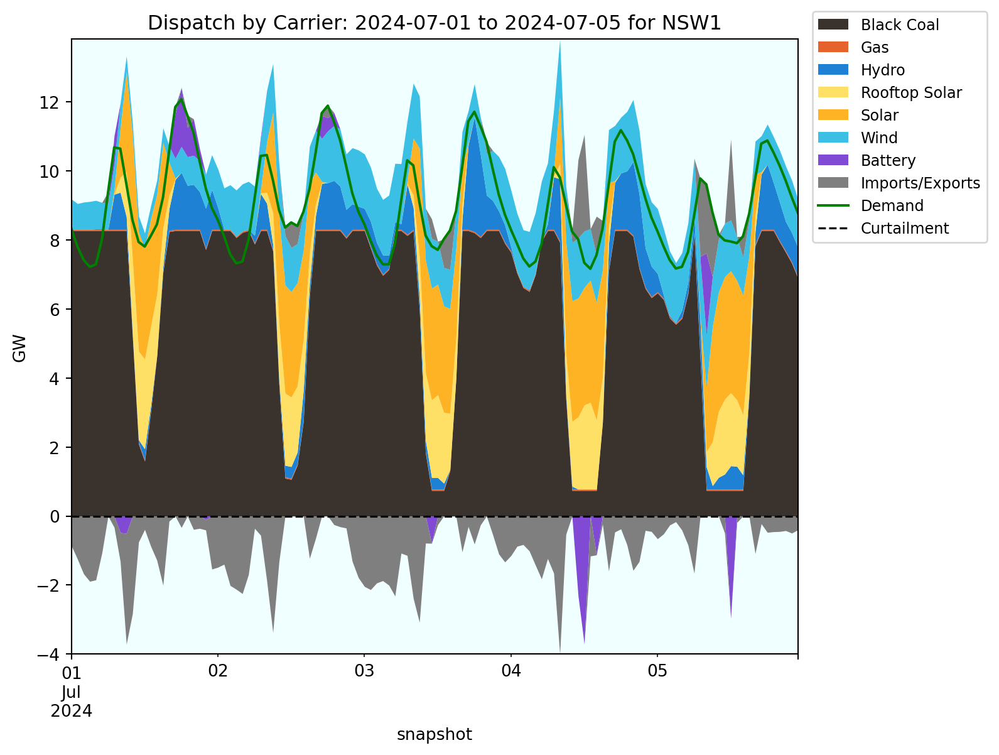
The interactive version is good for exploratory data analysis.
Show the Python Code
# plot_dispatch function example - interactive plot of VIC1 region for 5 days starting from 2024-01-19plot_dispatch(n, time="2024-01-10", days=5, regions=["VIC1"], show_imports=True, interactive=True)
Review the 2024 baseline model generator capacities.
Show the Python Code
def plot_generator_capacity_by_carrier(network):""" Plot total generator capacity by carrier for a given PyPSA network, excluding carriers with zero total capacity, and colour bars by carrier colour. """# 1) sum and filter capacity_by_carrier = ( network.generators .groupby("carrier") .p_nom_opt .sum() .div(1e3) ) capacity_by_carrier = capacity_by_carrier[capacity_by_carrier >0]# 2) get colors colors = [ network.carriers.loc[c, 'color']if c in network.carriers.index and'color'in network.carriers.columnselse'gray'for c in capacity_by_carrier.index ]# 3) create fig & ax, set backgrounds fig, ax = plt.subplots(figsize=(8, 5))# fig.patch.set_facecolor('#F0FFFF') # full-figure bg# axes bg# 4) plot onto that ax capacity_by_carrier.plot.barh(ax=ax, color=colors)# 5) labels & layout ax.set_facecolor('#F0FFFF') ax.set_xlabel("GW") ax.set_title("Total Generator Capacity by Carrier") fig.tight_layout() plt.show()plot_generator_capacity_by_carrier(n)
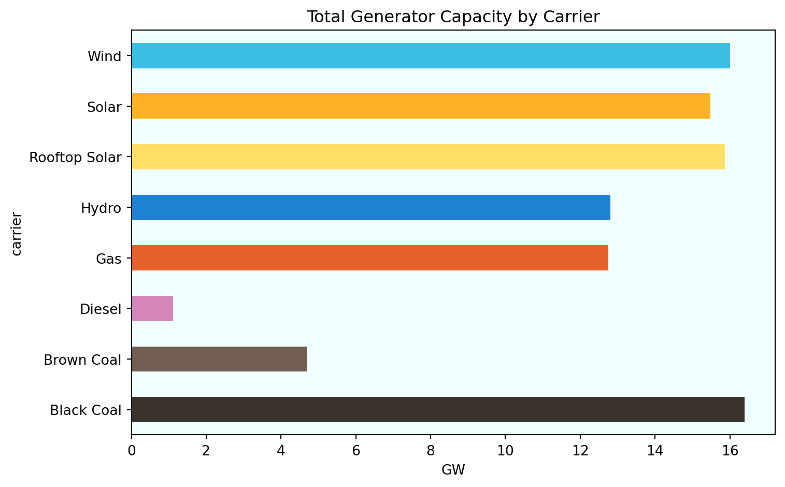
According to the AEMO’s ISP Step Change - all coal fired generation will be retired by 2038.
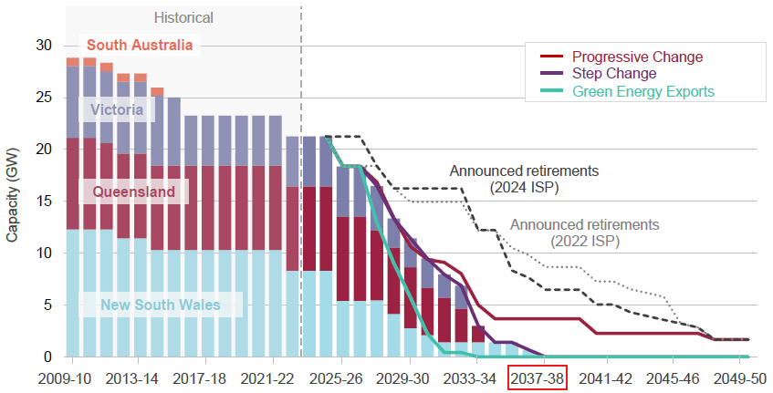
ISP Step Change Coal Retirements
Plot peak demand vs installed generation capacity per bus/region.
Show the Python Code
def plot_peak_demand_vs_capacity(network, stack_carrier=False, relative=False, sort_by="Max Demand"):""" Plot peak demand vs installed generation capacity per bus, filtering out zero-capacity carriers. Parameters: ----------- network : pypsa.Network The PyPSA network object. stack_carrier : bool, default=False Whether to stack capacity by carrier or plot total capacity. relative : bool, default=False If True, plot capacity as a percentage of peak demand. sort_by : str, optional Column to sort buses by on the x-axis. Options: "Max Demand", "Total Capacity", or None. """# --- 1) Max demand per bus --- max_demand = network.loads_t.p_set.max()# --- 2) Capacity per bus and carrier --- capacity_by_bus_carrier = ( network.generators.groupby(['bus', 'carrier']) .p_nom_opt.sum() .unstack(fill_value=0) )# Filter out carriers with zero total capacity nonzero_carriers = capacity_by_bus_carrier.columns[capacity_by_bus_carrier.sum(axis=0) >0] capacity_by_bus_carrier = capacity_by_bus_carrier[nonzero_carriers] total_capacity = capacity_by_bus_carrier.sum(axis=1)# --- 3) Combine DataFrame and filter out zero-demand & zero-capacity buses --- df = pd.concat([max_demand.rename("Max Demand"), total_capacity.rename("Total Capacity")], axis=1).fillna(0) df = df[(df["Max Demand"] >0) | (df["Total Capacity"] >0)]# --- 4) Relative scaling if requested ---if relative:# avoid div-by-zero df["Max Demand"] = df["Max Demand"].replace(0, np.nan) relative_capacity = capacity_by_bus_carrier.div(df["Max Demand"], axis=0) *100 df["Total Capacity"] = df["Total Capacity"] / df["Max Demand"] *100 df["Max Demand"] =100 ylabel ="Capacity as % of Peak Demand"else:# convert to GW df[["Max Demand", "Total Capacity"]] = df[["Max Demand", "Total Capacity"]] /1e3 relative_capacity = capacity_by_bus_carrier /1e3 ylabel ="GW"# --- 5) Sort if needed ---if sort_by in df.columns: df = df.sort_values(by=sort_by, ascending=False)# --- 6) Plotting --- fig, ax = plt.subplots(figsize=(8, 5)) bar_width =0.35 bar_pos = np.arange(len(df))if stack_carrier:# stack each non-zero carrier bottom = np.zeros(len(df))for carrier in capacity_by_bus_carrier.columns: vals = relative_capacity[carrier].reindex(df.index).fillna(0).values color = (network.carriers.loc[carrier, 'color']if'color'in network.carriers.columns and carrier in network.carriers.indexelseNone) ax.bar(bar_pos + bar_width/2, vals, bar_width, bottom=bottom, label=carrier, color=color) bottom += vals# plot peak demand on left ax.bar(bar_pos - bar_width/2, df["Max Demand"], bar_width, label='Peak Demand', color='gray', alpha=0.7)else: ax.bar(bar_pos - bar_width/2, df["Max Demand"], bar_width, label='Peak Demand', color='gray', alpha=0.7) ax.bar(bar_pos + bar_width/2, df["Total Capacity"], bar_width, label='Total Capacity', color='tab:blue')# --- 7) Labels and legend --- ax.set_xticks(bar_pos) ax.set_xticklabels(df.index, rotation=0, ha='right', fontsize=8) ax.set_ylabel(ylabel)# fig.patch.set_facecolor('#F0FFFF') ax.set_facecolor('#F0FFFF') ax.set_xlabel("Region/Bus") ax.set_title("Peak Demand vs Generation Capacity per Region"+ (" (Relative)"if relative else"")) ax.grid(True)# place legend outside# ax.legend(loc='upper left', bbox_to_anchor=(1.01, 1.0)) ax.legend(loc='upper right') plt.tight_layout() plt.show()plot_peak_demand_vs_capacity(n, stack_carrier=True)
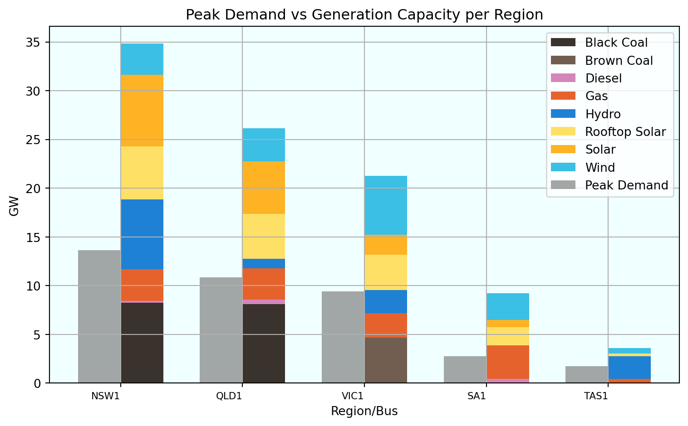
Plot total electricity demand vs generation per bus/region.
Show the Python Code
def plot_total_demand_vs_generation(network, stack_carrier=False, relative=False):""" Plot total electricity demand vs generation per bus. Parameters: - network: PyPSA Network object - stack_carrier: If True, stack generation by carrier (color-coded) - relative: If True, show generation as % of total demand (demand = 100%) """# Total demand per bus in GWh total_demand_per_bus = network.loads_t.p_set.sum().div(1e3) total_demand_per_bus.name ="Total Demand"# Total generation per generator in GWh gen_energy = network.generators_t.p.sum().div(1e3) gen_info = network.generators[["bus", "carrier"]] gen_energy_by_carrier = ( gen_info.assign(energy=gen_energy) .groupby(["bus", "carrier"])["energy"] .sum() .unstack(fill_value=0) ) total_generation_per_bus = gen_energy_by_carrier.sum(axis=1) total_generation_per_bus.name ="Total Generation"# Join and filter generation_vs_demand = pd.concat([total_demand_per_bus, total_generation_per_bus], axis=1).fillna(0) generation_vs_demand = generation_vs_demand.loc[ (generation_vs_demand["Total Demand"] >0) | (generation_vs_demand["Total Generation"] >0) ]if relative: generation_vs_demand["Total Demand"].replace(0, np.nan, inplace=True) # avoid div by 0 generation_vs_demand.sort_values(by="Total Demand", ascending=False) relative_generation = gen_energy_by_carrier.div(generation_vs_demand["Total Demand"], axis=0) *100 generation_vs_demand["Total Generation"] = ( generation_vs_demand["Total Generation"] / generation_vs_demand["Total Demand"] *100 ) generation_vs_demand["Total Demand"] =100 ylabel ="Generation vs Demand (%)"else: relative_generation = gen_energy_by_carrier ylabel ="GWh"# Sort by Total Demand (descending) and reindex generation_vs_demand = generation_vs_demand.sort_values(by="Total Demand", ascending=False) relative_generation = relative_generation.reindex(generation_vs_demand.index)# Plot fig, ax = plt.subplots(figsize=(8, 5)) bar_width =0.35 bar_positions = np.arange(len(generation_vs_demand))if stack_carrier: bottom = np.zeros(len(generation_vs_demand)) carriers = [ c for c in relative_generation.columnsif (c in network.carriers.index) and (relative_generation.loc[generation_vs_demand.index, c].sum() >0) ]for carrier in carriers: values = relative_generation.get(carrier, pd.Series(0, index=generation_vs_demand.index)) color = network.carriers.loc[carrier, 'color'] if'color'in network.carriers.columns elseNone ax.bar( bar_positions + bar_width /2, values, bar_width, label=f'Generation ({carrier})', bottom=bottom, color=color ) bottom += values.values ax.bar( bar_positions - bar_width /2, generation_vs_demand["Total Demand"], bar_width, label="Total Demand", color="gray", alpha=0.7 )else: ax.bar( bar_positions - bar_width /2, generation_vs_demand["Total Demand"], bar_width, label="Total Demand", color="gray", alpha=0.7 ) ax.bar( bar_positions + bar_width /2, generation_vs_demand["Total Generation"], bar_width, label="Total Generation", color="tab:blue" ) ax.set_xlabel("Region/Bus") ax.set_ylabel(ylabel) ax.set_title("Total Demand vs Total Generation per Region"+ (" (Relative)"if relative else"")) ax.set_xticks(bar_positions) ax.set_xticklabels(generation_vs_demand.index, rotation=45, ha="right") ax.set_facecolor('#F0FFFF') ax.legend(loc='upper right') ax.grid(True) plt.tight_layout() plt.show()plot_total_demand_vs_generation(n, stack_carrier=True, relative=False)
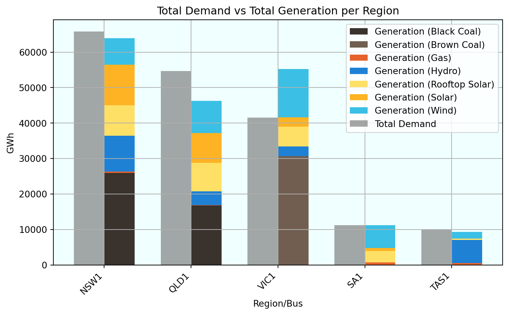
Load previously generated scenario data.
The 0_2024_baseline scenario is the baseline and hence scale-up factor is 1. The 19 others are scaled up from the baseline model according to the Objective column.
Note: some of the scenarios have unserved energy (bold, red font), which tends to show up in NSW and VIC before other regions.
Show the Python Code
# Previously saved results generated from the generate_scenarios function in the Appendix# Note: 0_2024_baseline is the baseline scenario and is equivalent to 'high-level_nem'.df_results = pd.read_csv("results/scenarios/scenarios_summary_20250731_1443.csv")# Format in a more user-friendly format for HTMLresults_tbl = df_results.copy()for col in df_results.select_dtypes(include=['object']).columns: results_tbl[col] = results_tbl[col].str.replace('\n', '<br>', regex=False)# Drop to make more space.results_tbl = results_tbl.drop(['Unserved Energy (GWh)', 'Wind & Solar Curtailment (GWh)'], axis=1)# Get the last column namelast_col = results_tbl.columns[-1]# Apply conditional formatting to the last column (which contains dictionary-like data)def format_last_column(val):if pd.isna(val) or val =='':returnstr(val)import re# Use regex to find all key: value patterns pattern =r'(\w+\d*): ([\d.-]+)'def replace_positive_values(match): key = match.group(1) value = match.group(2)try: num_val =float(value)if num_val >0:returnf'{key}: <span style="color: red; font-weight: bold;">{value}</span>'else:returnf'{key}: {value}'except (ValueError, TypeError):returnf'{key}: {value}'# Replace all matches with formatted versions result = re.sub(pattern, replace_positive_values, str(val))return result# Apply formatting to the last columnresults_tbl[last_col] = results_tbl[last_col].apply(format_last_column)html_table = results_tbl.to_html(escape=False, index=False)# Add container div with fixed height and scrollinghtml_table =f'''<div style="height: 600px; overflow-y: auto; border: 1px solid #ddd;">{html_table}</div>'''# Style the table with sticky headerhtml_table = html_table.replace('<table', '<table style="width: 100%; table-layout: fixed; font-size: 11px; font-family: monospace; border-collapse: collapse;"')html_table = html_table.replace('<th', '<th style="position: sticky; top: 0; background-color: #f5f5f5; border: 1px solid #ddd; padding: 8px; z-index: 10;"')html_table = html_table.replace('<td', '<td style="min-width: 250px; word-wrap: break-word; padding: 4px; border: 1px solid #eee;"')print(html_table)
Black Coal: 0.0 Brown Coal: 0.0 Diesel: 1110.0 Gas: 6375.5 Hydro: 12808.0 Rooftop Solar: 49367.01 Solar: 48465.0 Wind: 72321.0
NSW1: 0.0 QLD1: 0.0 SA1: 0.0 TAS1: 0.0 VIC1: 0.0
In the 0_2024_baseline scenario above, GPG (GWh) is much lower than in reality because I’ve set the marginal cost of gas higher than coal and there are no other influencing constraints such as carbon emissions. PyPSA is solving based on least-cost optimisation of power plant and storage dispatch within network constraints. This is much simpler than in real life, which involves a bid stack and many more constraints.
It is worth adding a comparison column to compare more realistic gas generation from Open Electricity to the high VRE scenario that I’m interested in: 8.3_VreCurtailReview . This scenario has zero coal generation and an 83% reduction in gas generation.
The 8.3_VreCurtailReview is one of the more plausible scenarios found by scaling up VRE and storage from the baseline model using a csv import file with different scale-up factors. Please note that, in this scenario, battery storage capacity is 2.5 times the level forecasted for 2049-50 in the AEMO ISP Step Change scenario for residential and commercial batteries.
Show the Python Code
# 1) Filter scenariodf_filt = results_tbl[results_tbl["Scenario"] =="8.3_VreCurtailReview"].copy()# 2) Compute the % change vs 10,919 GWh. Source: Open Electricity Data (this value will change regularly because it is a rolling 12-month period)base =10919df_filt["Gas Δ% vs 10919GWh"] = (df_filt["GPG (GWh)"] - base) / base *100# 3) Insert the new column right after “GPG (GWh)”col_idx = df_filt.columns.get_loc("GPG (GWh)")df_filt.insert(col_idx+1, "Gas Δ% vs 10919GWh", df_filt.pop("Gas Δ% vs 10919GWh"))# Inspecthtml_subset_table = df_filt.iloc[:, :5].to_html(escape=False, index=False)html_subset_table = html_subset_table.replace('<table', '<table style="width: 100%; table-layout: fixed; font-size: 11px; font-family: monospace;"')html_subset_table = html_subset_table.replace('<td', '<td style="min-width: 250px; word-wrap: break-word; padding: 4px;"')html_subset_table
# Load the network for the specific scenarion = pypsa.Network("results/scenarios/8.3_VreCurtailReview.nc")# Metadata to provide as arguments to the plot_dispatch() function.scenario ="8.3_VreCurtailReview"objective_text = df_results.loc[df_results["Scenario"] == scenario, "Objective"].values[0]
In the above snapshot there is minimal gas dispatch due to high levels of renewable energy. The trade-off is curtailment, the middle of the day on the 19th of May is a good example, where almost all solar is curtailed.
As anticipated, curtailment increases dramatically during the shoulder season, as shown above for South Australia.
Show the Python Code
plot_generator_capacity_by_carrier(n)
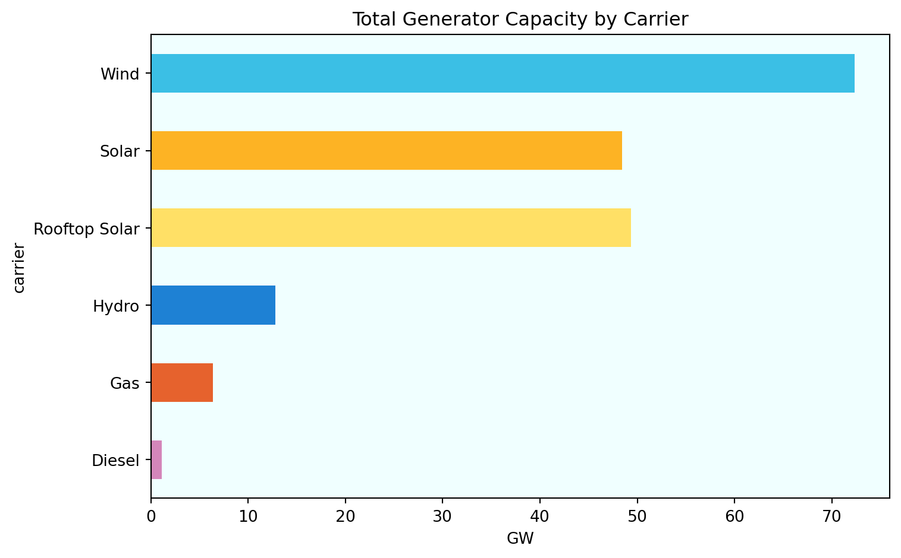
In this scenario, the wind generation capacity closely matches the 2049-50 ISP Step Change forecast, while solar capacity is lower as a result of my efforts to minimize curtailment. Coal has been reduced to zero and there is only a small amount of Gas. There are no changes to diesel.
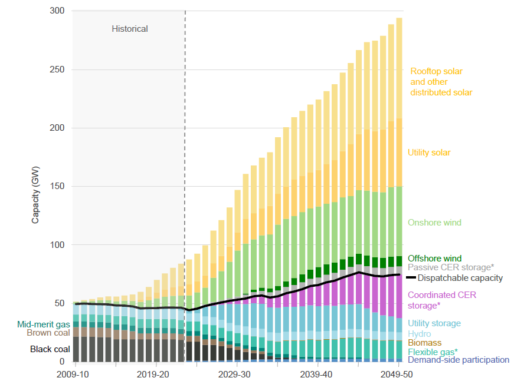
ISP Step Change Onshore wind ~69GW)
Assessing peak demand alongside installed generation capacity for each region in the 8.3_VreCurtailReview network clearly illustrates the substantial overbuilding of renewable energy relative to demand.
# Note: bus and region are synonymous in this context.def curtailment_region_carrier(n, carriers=['Rooftop Solar', 'Solar', 'Wind']):""" Calculate curtailment % by bus and carrier (excluding Hydro) and pivot carriers wide. Adds one monthly curtailed TWh string column per carrier named 'monthly_curtailment_<carrier>_twh_str'. Fixed so that 'month' in the intermediate DataFrame is a Timestamp, which lets us do .to_period('M') later without error. """ records = [] monthly_data = {carrier: [] for carrier in carriers}# create a PeriodIndex of each snapshot’s month snapshot_month = n.snapshots.to_series().dt.to_period('M')for carrier in carriers: mask = n.generators.carrier == carrier gens = n.generators[mask]for bus, gens_in_bus in gens.groupby('bus'): idx = gens_in_bus.index.intersection(n.generators_t.p_max_pu.columns)# overall curtailment % per bus/carrieriflen(idx) ==0: pct =0.0else: pot = (n.generators_t.p_max_pu[idx] .multiply(n.generators.loc[idx, 'p_nom'], axis=1) ).sum().sum() act = n.generators_t.p[idx].sum().sum() curtailed = pot - act pct =100* curtailed / pot if pot >0else0.0 records.append({'bus': bus, 'carrier': carrier, 'curtailment_pct': round(pct, 3)})# monthly curtailed MWh per bus/carrieriflen(idx) >0: pot_m = (n.generators_t.p_max_pu[idx] .multiply(n.generators.loc[idx, 'p_nom'], axis=1)) act_m = n.generators_t.p[idx] pot_mon = pot_m.groupby(snapshot_month).sum().sum(axis=1) act_mon = act_m.groupby(snapshot_month).sum().sum(axis=1) curtailed_mon = pot_mon - act_monelse:# build a zero‐series indexed by each unique period curtailed_mon = pd.Series(0.0, index=snapshot_month.unique())# *** store month as a Timestamp, not Period ***for period, val in curtailed_mon.items(): monthly_data[carrier].append({'month': period.to_timestamp(), # <- convert here'bus': bus,'curtailed_mwh': val })# build the bus × carrier % pivot df = pd.DataFrame(records) pivot_df = df.pivot(index='bus', columns='carrier', values='curtailment_pct').fillna(0.0)# for each carrier, build its monthly TWh‐string columnfor carrier in carriers: mon_df = pd.DataFrame(monthly_data[carrier]) summed = (mon_df.groupby(['bus', 'month'])['curtailed_mwh'] .sum() .reset_index())# now month is Timestamp, so this works: start = summed['month'].min().to_period('M') end = summed['month'].max().to_period('M') months_sorted = pd.period_range(start, end, freq='M').to_timestamp() ser = {}for bus in pivot_df.index: subset = summed[summed['bus'] == bus].set_index('month')['curtailed_mwh'].to_dict() arr = np.array([round(subset.get(m, 0.0), 3) for m in months_sorted]) twh = arr /1e6# convert MWh to TWh ser[bus] =' '.join(f'{x:.3f}'for x in twh) col =f'monthly_curtailment_{carrier.lower().replace(" ", "_")}_twh_str' pivot_df[col] = pivot_df.index.map(ser)return pivot_df
Leverage the great_tables python library to highlight curtailment data returned in the curtailment_region_carrier function above.
Show the Python Code
pivot_df = curtailment_region_carrier(n)# from great_tables import GT, md, system_fonts, nanoplot_optionscurtailment_tbl = GT(data=pivot_df \ .reset_index() \ .round(2) \ .rename(columns={'bus': 'Region','Solar': 'Utility Solar', 'monthly_curtailment_rooftop_solar_twh_str': 'Rooftop Solar Curtailment','monthly_curtailment_solar_twh_str': 'Utility Solar Curtailment','monthly_curtailment_wind_twh_str': 'Wind Curtailment' }) )# Generate great table for curtailment by region and carrier# Note: Scale-up objective is hardcoded in the source note.# objective_text.replace('\n', ', ') curtailment_gt = curtailment_tbl.tab_header( title="NEM Variable Renewable Energy Curtailment by Region" ) \ .tab_spanner( label="Curtailment (%)", columns=['Rooftop Solar', 'Utility Solar', 'Wind'] ) \ .tab_spanner( label="Monthly Curtailment Profiles (TWh)", columns=['Rooftop Solar Curtailment','Utility Solar Curtailment','Wind Curtailment'] ) \ .data_color( columns=['Rooftop Solar', 'Utility Solar', 'Wind'], palette=["#31a354", "#78c679", "#ffffcc","#fafa8c", "#f4cd1e", "#f8910b"], domain=[0, 100] ) \ .cols_width( {'Wind': '120px', 'Utility Solar': '120px', 'Rooftop Solar': '120px'} ) \ .cols_align( align='center' ) \ .tab_source_note( source_note=md("**Calculation**: Curtailment = (Potential energy - Actual energy) / Potential energy * 100." ) ) \ .tab_source_note( source_note=md("**Note**: there are currently no listed utility scale solar in the TAS1 [Open Electricity Facilities](https://explore.openelectricity.org.au/facilities/tas1/?tech=solar_utility&status=operating,committed)" ) ) \ .tab_source_note( source_note=md("**Scenario**: 8.3_VreCurtailReview (Zero coal & 83% reduction in GPG).<br><br> **Scale-up objective from 2024 baseline**: *NSW1-Black Coal: x0.0, NSW1-Gas: x0.5, NSW1-Rooftop Solar: x3.0, NSW1-Solar: x3.0, NSW1-Wind: x6.0, NSW1-Battery: x8.0, QLD1-Black Coal: x0.0, QLD1-Gas: x0.5, QLD1-Rooftop Solar: x3.0, QLD1-Solar: x3.0, QLD1-Wind: x6.0, QLD1-Battery: x6.0, SA1-Gas: x0.5, SA1-Rooftop Solar: x2.0, SA1-Solar: x3.0, SA1-Wind: x2.0, SA1-Battery: x6.0, TAS1-Gas: x0.5, TAS1-Rooftop Solar: x3.0, TAS1-Wind: x5.0, TAS1-Battery: x8.0, VIC1-Gas: x0.5, VIC1-Brown Coal: x0.0, VIC1-Rooftop Solar: x4.0, VIC1-Solar: x4.0, VIC1-Wind: x4.0, VIC1-Battery: x8.0*") ) \ .fmt_nanoplot("Rooftop Solar Curtailment", plot_type="bar", options=nanoplot_options( data_bar_fill_color="#FFE066", y_ref_line_fmt_fn="GWh", ) ) \ .fmt_nanoplot("Utility Solar Curtailment", plot_type="bar", options=nanoplot_options( data_bar_fill_color="#FDB324", y_ref_line_fmt_fn="GWh", ) ) \ .fmt_nanoplot("Wind Curtailment", plot_type="bar", options=nanoplot_options( data_bar_fill_color="#3BBFE5", y_ref_line_fmt_fn="GWh", ) ) \ .tab_options( source_notes_font_size='x-small', source_notes_padding=3, heading_subtitle_font_size='small', table_font_names=system_fonts("humanist"), data_row_padding='1px', heading_background_color='#F0FFFF', source_notes_background_color='#F0FFF0', column_labels_background_color='#F0FFF0', table_background_color='snow', data_row_padding_horizontal=3, column_labels_padding_horizontal=58 ) \ .opt_table_outline()curtailment_gt
NEM Variable Renewable Energy Curtailment by Region
Region
Curtailment (%)
Monthly Curtailment Profiles (TWh)
Rooftop Solar
Utility Solar
Wind
Rooftop Solar Curtailment
Utility Solar Curtailment
Wind Curtailment
NSW1
41.86
24.86
13.89
QLD1
35.07
37.66
15.08
SA1
63.79
53.36
18.13
TAS1
23.12
0.0
5.43
VIC1
30.12
47.78
13.4
Calculation: Curtailment = (Potential energy - Actual energy) / Potential energy * 100.
The model applies relatively harsh curtailment to rooftop solar. This is a result of curtailment already being incorporated into utility-scale solar availability (capacity) factors, which I’ve sourced and then calculated from AEMO’s NEMWEB dispatch data.
Almost every large solar farm in Australia’s southeastern states will be forced to switch off at least one-third of the power they generate by 2027 as delays to critical energy transition projects cause major bottlenecks on the electricity grid. - Ryan Cropp, Australian Financial Review, Jul 10, 2025 [link].
Large-scale solar is fast and cost-effective to build, but it’s also the most exposed to curtailment, especially when system security limits or negative prices hit in the middle of a sunny day. - Chris O’Keefe, Clean Energy Council.
The built-in curtailment would likely, at least partially explain why AEMO uses solar and wind traces, rather than solely relying on historical data, in its ISP modelling.
Comparing rooftop solar with utility solar availability (capacity) factors2 in our network will help clarify this:
Show the Python Code
solar_cf = n.generators_t.p_max_pu[['SA1-SOLAR', 'SA1-ROOFTOP-SOLAR','VIC1-SOLAR', 'VIC1-ROOFTOP-SOLAR','QLD1-SOLAR', 'QLD1-ROOFTOP-SOLAR','NSW1-SOLAR', 'NSW1-ROOFTOP-SOLAR']].reset_index()solar_cf['hour'] = solar_cf['snapshot'].dt.hourhours =sorted(solar_cf['hour'].unique())even_hours = [h for h in hours if h %2==0]even_positions = [hours.index(h) for h in even_hours]combos = [ ['SA1-SOLAR', 'SA1-ROOFTOP-SOLAR'], ['VIC1-SOLAR', 'VIC1-ROOFTOP-SOLAR'], ['QLD1-SOLAR', 'QLD1-ROOFTOP-SOLAR'], ['NSW1-SOLAR', 'NSW1-ROOFTOP-SOLAR']]fig, axes = plt.subplots( nrows=2, ncols=2, figsize=(8.5, 8), sharex=True, sharey=True# share y for common scale)axes = axes.flatten()width =0.35x = np.arange(len(hours))for ax, (sol_col, rt_col) inzip(axes, combos): sol_data = [solar_cf[solar_cf['hour']==h][sol_col].dropna().values for h in hours] rt_data = [solar_cf[solar_cf['hour']==h][rt_col].dropna().values for h in hours] bp1 = ax.boxplot( sol_data, positions=x - width/2, widths=width, patch_artist=True, boxprops=dict(facecolor='#FDB324', edgecolor='black'), medianprops=dict(color='blue'), whiskerprops=dict(color='black'), capprops=dict(color='black'), flierprops=dict(markeredgecolor='black') ) bp2 = ax.boxplot( rt_data, positions=x + width/2, widths=width, patch_artist=True, boxprops=dict(facecolor='#FFE066', edgecolor='black'), medianprops=dict(color='green'), whiskerprops=dict(color='black'), capprops=dict(color='black'), flierprops=dict(markeredgecolor='black') ) ax.set_title(f"{sol_col} vs {rt_col}") ax.set_xticks(even_positions) ax.set_xticklabels(even_hours) ax.set_facecolor('#F0FFFF')# no individual ylabel here# shared legendhandles = [bp1["boxes"][0], bp2["boxes"][0]]labels = ['Utility-scale Solar', 'Rooftop Solar']fig.legend(handles, labels, loc='lower center', ncol=2, bbox_to_anchor=(0.5, -0.04))# one common y-axis labelfig.supxlabel('Hour of Day (2024)')fig.supylabel('Capacity Factor')fig.suptitle("Utility Solar vs Rooftop Solar Capacity Factors")# adjust spacingfig.subplots_adjust(top=0.90, bottom=0.08, left=0.1, right=0.9, hspace=0.2, wspace=0.1)plt.show()
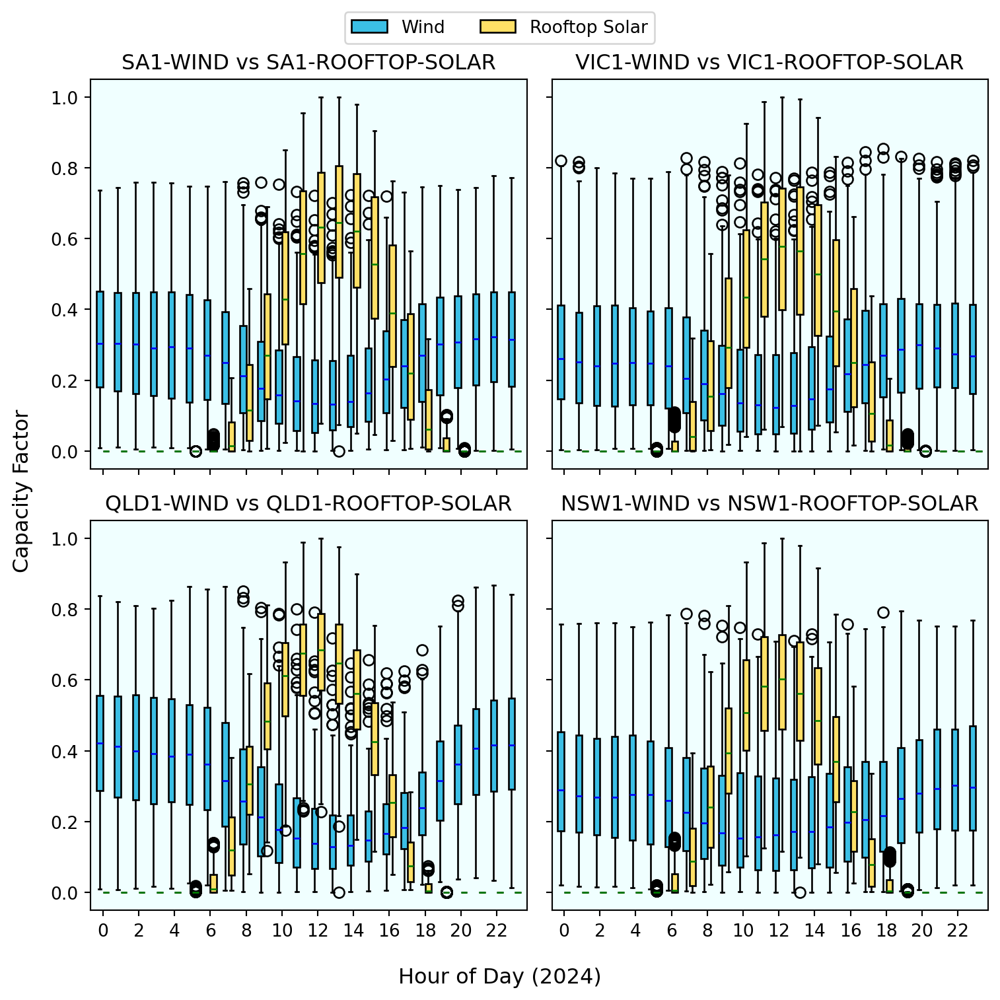
There is a clear midday plateau in utility solar output (orange boxplots), likely resulting from negative market prices and/or network constraints such as congestion.
In Victoria, the curtailment plateau is especially pronounced. This is likely due to utility-scale solar farms being situated in parts of the network that experience congestion. Congestion arises when the network’s ability to transmit electricity is constrained, requiring operators to curtail solar generation despite sufficient solar resources being available.
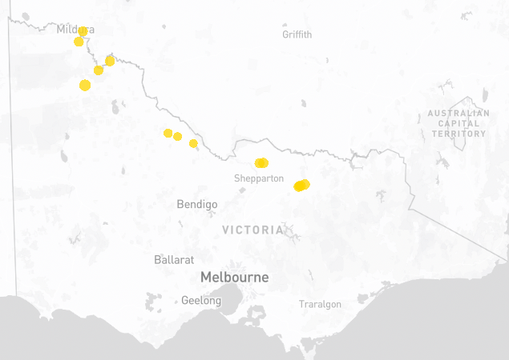
Operating utility solar in Victoria (Open Electricity)
Under near-term operating conditions, connection points in Victoria have on average close to 50% curtailment for solar and 30% curtailment for wind. - AEMO, 2025 Enhanced Locational Information (ELI) Report [link]
Further congestion is noted to impact the curtailment at north-west Victoria, due to local transmission network limitations and existing high level of renewable energy generation. - AEMO, 2025 ELI Report
In contrast, rooftop solar is far more challenging to curtail in real-world conditions. Although mechanisms exist (such as the capability to remotely disconnect rooftop PV via regulations like South Australia’s Smarter Homes program), these are described as a “tool of last resort” and invoked only in extreme security conditions. The technical ability to enforce widespread, routine curtailment of rooftop systems is currently limited; implementing it more broadly would risk significant social license erosion unless there is a massive uptake of consumer energy resources such as batteries and electric vehicles, allowing households to store their own surplus solar for later use.
A similar dynamic is evident with wind output. The dip in wind is too pronounced to be natural drop-off in wind speed during the middle of the day.
Show the Python Code
wind_cf = n.generators_t.p_max_pu[['SA1-WIND', 'SA1-ROOFTOP-SOLAR','VIC1-WIND', 'VIC1-ROOFTOP-SOLAR','QLD1-WIND', 'QLD1-ROOFTOP-SOLAR','NSW1-WIND', 'NSW1-ROOFTOP-SOLAR']].reset_index()wind_cf['hour'] = wind_cf['snapshot'].dt.hourhours =sorted(wind_cf['hour'].unique())even_hours = [h for h in hours if h %2==0]even_positions = [hours.index(h) for h in even_hours]combos = [ ['SA1-WIND', 'SA1-ROOFTOP-SOLAR'], ['VIC1-WIND', 'VIC1-ROOFTOP-SOLAR'], ['QLD1-WIND', 'QLD1-ROOFTOP-SOLAR'], ['NSW1-WIND', 'NSW1-ROOFTOP-SOLAR']]fig, axes = plt.subplots( nrows=2, ncols=2, figsize=(8.5, 8), sharex=True, sharey=True# share y for common scale)axes = axes.flatten()width =0.35x = np.arange(len(hours))for ax, (sol_col, rt_col) inzip(axes, combos): wind_data = [wind_cf[wind_cf['hour']==h][sol_col].dropna().values for h in hours] rt_data = [wind_cf[wind_cf['hour']==h][rt_col].dropna().values for h in hours] bp1 = ax.boxplot( wind_data, positions=x - width/2, widths=width, patch_artist=True, boxprops=dict(facecolor='#3BBFE5', edgecolor='black'), medianprops=dict(color='blue'), whiskerprops=dict(color='black'), capprops=dict(color='black'), flierprops=dict(markeredgecolor='black') ) bp2 = ax.boxplot( rt_data, positions=x + width/2, widths=width, patch_artist=True, boxprops=dict(facecolor='#FFE066', edgecolor='black'), medianprops=dict(color='green'), whiskerprops=dict(color='black'), capprops=dict(color='black'), flierprops=dict(markeredgecolor='black') ) ax.set_title(f"{sol_col} vs {rt_col}") ax.set_xticks(even_positions) ax.set_xticklabels(even_hours) ax.set_facecolor('#F0FFFF')# no individual ylabel here# shared legendhandles = [bp1["boxes"][0], bp2["boxes"][0]]labels = ['Wind', 'Rooftop Solar']fig.legend(handles, labels, loc='lower center', ncol=2, bbox_to_anchor=(0.5, -0.04))# one common y-axis labelfig.supxlabel('Hour of Day (2024)')fig.supylabel('Capacity Factor')fig.suptitle("Wind vs Rooftop Solar Capacity Factors")fig.subplots_adjust(top=0.90, bottom=0.08, left=0.1, right=0.9, hspace=0.2, wspace=0.1)plt.show()
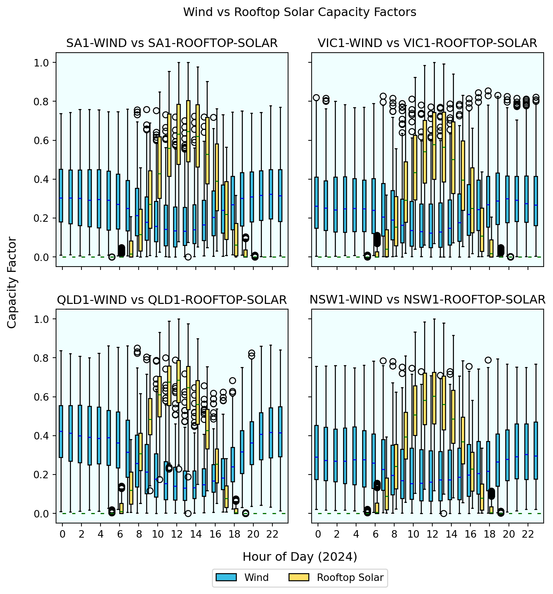
05 Conclusion and Next Steps
This simple model demonstrates that achieving a high-penetration renewable energy grid is possible. However, there is an inherent trade-off between deploying large amounts of variable renewable energy and managing increased curtailment. The model focuses solely on power flow analysis and does not account for costs beyond assigning marginal costs to generators to enable least-cost dispatch. Additionally, I’ve assigned a very small negative marginal cost to storage units, encouraging batteries to charge earlier rather than at the last possible moment - an approach enabled by the model’s assumption of perfect foresight.
Note
There is no assurance the system would operate in a secure state within the 8.3_VreCurtailReview scenario/network.
Incorporating the necessary constraints to ensure secure system operation would introduce significant complexity and is reserved for future analysis. Additionally, this scenario is highly sensitive to increases in demand - a 5% rise, for instance, leads to unserved energy. This highlights the need for substantial overbuilding to create an adequate reserve buffer, which, in turn, further increases curtailment.
During the development of the 8.3_VreCurtailReview scenario, several scenarios with aggressive coal reduction - such as 2_BalancedAggressiveTransition - led to a doubling of gas-powered generation (GPG). This occurred because GPG was required to compensate for the loss of 75% of baseload capacity previously provided by coal. Further details can be found in the Appendix.
The high penetration VRE scenarios are also under-utilising hydro. Some of this can be explained by setting a small marginal price ($8.58) as per 2024 ISP Inputs and Assumptions workbook. An example of this marginal price sensitivity can be found in the Appendix. 2024 was a dry year, which also contributed to Hydro underperformance.
Potential future analysis would also incorporate:
- increased transmission (lines/links currently stacked on top of each other as they join the same bus)
- accurate geospatial resolution
- more detailed costs, including capital costs, and
- carbon emissions.
06 Appendix
Reserve Requirements
As mentioned in the conclusion, there is no certainty around whether or not the 8.3_VreCurtailReview network could operate in a secure state.
It is possible to determine in rough terms, how often for example the network would be issued Lack of Reserve (LOR) notices by the system operator. Here we’ll use the per region thresholds published by AEMO.
It is worth noting that these reserve requirements are dynamic and always changing, see example below of a recent LOR notice from AEMO in reference to the South Australian region:
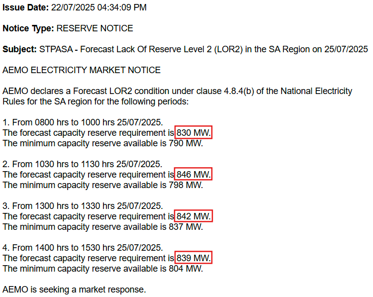
LOR notice example showing dynamic reserve requirements
In the count_reserve_breaches_df funtion below, we can pass reserve thresholds per region, published in the 2024 ISP Inputs and Assumptions workbook.xlsx (sheet: Reserves):
def count_reserve_breaches_df(n, threshold_mw=850):""" Count how many hours in 2024 the reserve margin (available capacity minus load) at each bus dips below threshold_mw. Returns a DataFrame with breach counts and breach ratios. Parameters ---------- n : pypsa.Network A solved PyPSA network. threshold_mw : float or dict If float, same threshold (in MW) for every bus. If dict, keys are bus names and values are thresholds for those buses; any bus not in the dict uses the global default (if provided) or 0. Returns ------- pd.DataFrame DataFrame with columns: 'breach_hours': number of hours below threshold 'breach_ratio': breach_hours / total_snapshots Index is bus name. """ avail = n.generators_t.p_max_pu.multiply(n.generators.p_nom, axis=1) avail_by_bus = avail.T.groupby(n.generators.bus).sum().T loads = n.loads_t.p_set load_by_bus = loads.T.groupby(n.loads.bus).sum().T all_buses =sorted(set(avail_by_bus.columns) |set(load_by_bus.columns)) avail_by_bus = avail_by_bus.reindex(columns=all_buses, fill_value=0) load_by_bus = load_by_bus.reindex(columns=all_buses, fill_value=0) avail_by_bus = avail_by_bus.reindex(index=load_by_bus.index, fill_value=0) reserve = avail_by_bus.subtract(load_by_bus, fill_value=0)ifisinstance(threshold_mw, dict): thresh = pd.Series({bus: threshold_mw.get(bus, 0.0) for bus in all_buses})else: thresh = pd.Series(threshold_mw, index=all_buses) breaches = (reserve.lt(thresh, axis=1)).sum() total_snapshots = reserve.shape[0] df = pd.DataFrame({'breach_hours': breaches,'breach_ratio': breaches / total_snapshots })return df# For per-region thresholds# Source: 2024 ISP Inputs and Assumptions workbook.xlsx (sheet: Reserves)per_region = {"NSW1":705, "VIC1":550, "QLD1":710, "SA1":195, "TAS1":140}count_reserve_breaches_df(n, threshold_mw=per_region)
breach_hours
breach_ratio
bus
NSW1
3229
0.367600
QLD1
2174
0.247495
SA1
2707
0.308174
TAS1
1799
0.204804
VIC1
2026
0.230647
New South Wales is attracting the most breaches at just over one third of hours breached.
We can take a quick look at the gas generation coverage.
There is enough reserve of gas capacity, however the model will operate under this on many occasions (as highlighted above), unless a custom constraint is added, which will increase solver run times.
Generator Sensitivity to Marginal Costs
Review potential vs dispatch of Hydro in the current network. This example highlights how changing one input assumption can make a big difference to the dispatch result.
When the marginal price is set to $8.58 Hydro is seldomly dispatched - mainly in the winter months.
Now set marginal cost of Hydro generators to zero.
Optimize the network.
Show the Python Code
# Ilustrate sensitivity of Hydro generation to marginal cost setting# Get indices of Hydro generatorshydro_gens = n.generators.index[n.generators.carrier =='Hydro']# Set marginal_cost to zero & optimisen.generators.loc[hydro_gens, 'marginal_cost'] =0.0n.optimize()
The 2_BalancedAggressiveTransition scenario has a 75% reduction in coal and only a mild increase in renewables and storage (see table below).
This indicates that without rapidly expanding renewables and storage, phasing out coal will strain gas generators and related infrastructure, as this scenario sees gas-powered generation rise by 107% compared to Open Electricity consumption over a recent 12 month period.
Show the Python Code
# 1) Filter scenariodf_bat = results_tbl[results_tbl["Scenario"] =="2_BalancedAggressiveTransition"].copy()# 2) Compute the % change vs 10,919 GWh. Source: Open Electricity Data (note this will change regularly because it is a rolling 12-month period)base =10919df_bat["Gas Δ% vs 10919GWh"] = (df_bat["GPG (GWh)"] - base) / base *100# 3) Insert the new column right after “GPG (GWh)”col_idx = df_bat.columns.get_loc("GPG (GWh)")df_bat.insert(col_idx+1, "Gas Δ% vs 10919GWh", df_bat.pop("Gas Δ% vs 10919GWh"))# Inspecthtml_bat_table = df_bat.iloc[:, :5].to_html(escape=False, index=False)html_bat_table = html_bat_table.replace('<table', '<table style="width: 100%; table-layout: fixed; font-size: 11px; font-family: monospace;"')html_bat_table = html_bat_table.replace('<td', '<td style="min-width: 250px; word-wrap: break-word; padding: 4px;"')html_bat_table
Load the 2_BalancedAggressiveTransition network. This scenario has a 75% reduction in coal and a limited increase in renewables and storage.
Show the Python Code
# Load the network for the specific scenarion = pypsa.Network("results/scenarios/2_BalancedAggressiveTransition.nc")# Metadata to provide as arguments to the plot_dispatch() function.scenario ="2_BalancedAggressiveTransition"objective_text = df_results.loc[df_results["Scenario"] == scenario, "Objective"].values[0]
The 4_4xVreTransitionZeroCoal scenario has a zero coal and a 4x increase in wind and utility solar and storage plus a 2x increase in rooftop solar (see table below).
This reduces gas-powered generation by 51% compared to Open Electricity consumption over a recent 12 month period.
Show the Python Code
# 1) Filter scenariodf_4x = results_tbl[results_tbl["Scenario"] =="4_4xVreTransitionZeroCoal"].copy()# 2) Compute the % change vs 10,919 GWh. Source: Open Electricity Data (note this will change regularly because it is a rolling 12-month period)base =10919df_4x["Gas Δ% vs 10919GWh"] = (df_4x["GPG (GWh)"] - base) / base *100# 3) Insert the new column right after “GPG (GWh)”col_idx = df_4x.columns.get_loc("GPG (GWh)")df_4x.insert(col_idx+1, "Gas Δ% vs 10919GWh", df_4x.pop("Gas Δ% vs 10919GWh"))# Inspecthtml_4x_table = df_4x.iloc[:, :5].to_html(escape=False, index=False)html_4x_table = html_4x_table.replace('<table', '<table style="width: 100%; table-layout: fixed; font-size: 11px; font-family: monospace;"')html_4x_table = html_4x_table.replace('<td', '<td style="min-width: 250px; word-wrap: break-word; padding: 4px;"')html_4x_table
Load the 4_4xVreTransitionZeroCoal network. This scenario has a 100% reduction in coal and a large increase in renewables and storage.
Show the Python Code
# Load the network for the specific scenarion = pypsa.Network("results/scenarios/4_4xVreTransitionZeroCoal.nc")# Metadata to provide as arguments to the plot_dispatch() function.scenario ="4_4xVreTransitionZeroCoal"objective_text = df_results.loc[df_results["Scenario"] == scenario, "Objective"].values[0]
Tip: Right-click or Cmd/Ctrl+Click to open in a new tab.
Like this Quarto document, the Streamlit app is better viewed on a large screen.
Footnotes
Western Australia and the Northern Territory operate separate electricity systems and are not part of the NEM.↩︎
Rooftop solar capacity factors determined by normalising (dividing each observation) against the region’s maximum output - see import_rooftop_solar.py for python code.↩︎
Source Code
---title: "A High-level Open Source Model for the Australian National Electricity Market (NEM)"author: "Grant Chalmers"date: "2025-07-31"format: html: output-file: index.html theme: cosmo # theme toc: true # TOC toc_float: true # Floating TOC sidebar toc-depth: 4 # Numbered depth code-fold: true code-tools: true code-summary: "Show the Python Code" # Friendly prompt to users df-print: paged df-print-paged: # Not working in python page-length: 10 anchor-sections: true # Anchors for direct section linkingexecute: freeze: auto # rows per page---## **Introduction**The National Electricity Market (NEM), which spans roughly 40,000 km of transmission lines and cables, serves more than 23 million Australians across five interconnected regions - Queensland, New South Wales, Victoria, South Australia, and Tasmania.^[Western Australia and the Northern Territory operate separate electricity systems and are not part of the NEM.] As one of the world's longest and most complex power systems, the NEM coordinates wholesale electricity generation and transports it from generators to large industrial users, local distributors, and ultimately to homes and businesses. This system relies on a real-time ‘pool’ market, with electricity output aggregated and scheduled every five minutes to efficiently balance demand and incentivise investment in fast-response technologies, such as batteries and gas peaking units. As the NEM undergoes rapid transformation, driven by government policy promoting greater renewable energy integration and grid modernisation, advanced modelling tools have become essential for analysing the current state of the market and evaluating future scenarios. This Quarto document presents the development of a high-level baseline model for the NEM power system using [PyPSA (Python for Power System Analysis)](https://pypsa.readthedocs.io/en/latest/), an open-source framework for simulating and optimizing modern energy systems. The model, referred to as High-level_NEM, is a 5-node model (one bus per region) based on actual 2024 generation and demand profiles at hourly resolution. A comparison of the 2024 baseline model with a future scenario is presented in this document.The future scenario has increased renewable energy and storage and associated reduction in thermal generation.The workflow implemented in this Quarto document encompasses the following key steps: - **Data Import and Preprocessing:** Loading and preparing network topology, generator, storage, and time series data from actual NEM system records and relevant administrative datasets. - **Network Construction:** Building the PyPSA network by adding buses, loads, generators, storage units, and transmission lines. - **Temporal Resolution and Snapshots:** Setting up the model to operate at a chosen temporal granularity, allowing for the study of daily and seasonal variability in demand and renewable generation. - **Optimisation and Scenario Analysis:** Solving the baseline model using linear optimisation to determine the optimal dispatch of resources, and extending the analysis to a plausible future scenario with an aggressive increase in variable renewable energy and associated reduction in thermal generation. - **Results Visualisation and Verification:** Generating plots and statistics to interpret model outputs, including network topology, dispatch profiles, generation mix, and importantly, curtailment. - **Scenario Functions:** Providing reusable functions for projecting various scaled-up generation scenarios. ## **Research Objectives***Objective:*Develop a high-level 5-node baseline PyPSA model for the NEM and VRE/storage scale-up scenarios with: 1. One bus per NEM region with transmission interconnectors 2. Hourly time resolution to capture some RE intermittency 3. Comparison of 2024 baseline model (*0_2024_baseline*) to a high penetration renewable energy scenario (*8.3_VreCurtailReview*) *Key Assumptions* Baseline 2024 model: - 2024 demand - 2024 generation profiles - 2024 renewable energy availability (capacity) factors (incl. hydro). - Generator registered capacities sourced from [Open Electricity facilities](https://explore.openelectricity.org.au/facilities/nem/?status=operating,committed) Inclusive of operating and **committed**, therefore includes Snowy 2.0, Hunter Gas and a significant increase in battery storage over what is currently operating. - Time series data is at hourly resolution. - Rooftop solar sourced from AEMO via [nemosis](https://github.com/UNSW-CEEM/NEMOSIS) python package (TYPE = *'MEASUREMENT'*). - Efficiency of storage on the way in and out set at 0.917 (round trip 0.84) via [2024 ISP Inputs and Assumptions workbook](https://aemo.com.au/-/media/files/major-publications/isp/2024/2024-isp-inputs-and-assumptions-workbook.xlsx?la=en). - Starter battery (600MW Cellars Hill) added in TAS1 in order to be able to scale up (not currently operating, but has some level of state govt. support). - Project EnergyConnect and Marinus stage 1 implemented on top of existing interconnectors (constrained by nominal capacity) - One generator of each major source and one battery setup per region/bus::: {.callout-note}Apart from the baseline model, 19 additional scenarios were created by varying the scale-up of VRE and storage, and the scale-down of thermal generation, ultimately culminating in the final `8.3_VreCurtailReview` scenario.:::By following this workflow, the document provides a high-level example for those learning power system analysis with PyPSA.**Important links/references:** [TU Berlin: Data Science for Energy System Modelling](https://fneum.github.io/data-science-for-esm/intro.html#jupyter.org/)[PyPSA Documentation and Components](https://pypsa.readthedocs.io/en/latest/user-guide/components.html)[PyPSA Earth Documentation](https://pypsa-earth.readthedocs.io/en/latest/)[GitHub PyPSA Sources](https://github.com/PyPSA)[PyPSA-PH: High-Resolution Open Source Power System Model for the Philippines](https://github.com/arizeosalac/PyPSA-PH/tree/main)[2024 Integrated System Plan (ISP)](https://aemo.com.au/energy-systems/major-publications/integrated-system-plan-isp/2024-integrated-system-plan-isp)[Open Electricity](https://openelectricity.org.au/)### 01 Import This section imports all necessary Python packages and libraries required for data processing, power system modelling, geospatial analysis, and visualisation. These packages provide the foundational tools for building, analysing, and visualising the High-level NEM baseline model and high penetration renewable energy model.```{python}import pandas as pdimport numpy as npimport matplotlib.pyplot as pltimport matplotlib as mplfrom matplotlib.dates import AutoDateLocator, ConciseDateFormatterimport pypsafrom pypsa.plot.maps.static import add_legend_patchesfrom datetime import timedeltafrom datetime import datetime from dateutil.parser import parseimport cartopy.crs as ccrsimport cartopy.feature as cfeaturefrom time import perf_counterfrom great_tables import GT, md, system_fonts, nanoplot_optionsfrom IPython.display import display, HTML```### 02 Create NetworkThis section covers the creation of the High-level NEM network, including loading network data, initializing the PyPSA network object, and preparing the structure for adding buses, loads, generators, storage units, and transmission lines. #### 02.01 Load Network Data```{python}# Load componentsgenerators = pd.read_csv("data/generators.csv").set_index('name')buses = pd.read_csv("data/buses.csv", index_col=0)loads = pd.read_csv("data/loads.csv", index_col=0)lines = pd.read_csv("data/lines.csv", index_col=0)links = pd.read_csv("data/links.csv", index_col=0)storage_units = pd.read_csv("data/storage_units.csv", index_col=0)``````{python}# Load time series data, which has 8784 rows due to 2024 being a leap year.load_ts = pd.read_csv("data/loads_t.p_set.csv", index_col=0)load_ts.index = pd.to_datetime(load_ts.index, errors="raise")print(load_ts.index.dtype) # Below should be empty if all dates are validload_ts[~load_ts.index.notnull()]generators_ts = pd.read_csv("data/generators_t.p_max_pu.csv", index_col=0)generators_ts.index = pd.to_datetime(generators_ts.index, errors="raise")print(generators_ts.index.dtype)ifnot load_ts.index.equals(generators_ts.index): raiseValueError("Time series indices are not aligned")```#### 02.02 Initialize the network```{python}n = pypsa.Network()```### 03 Add Network ComponentsThis section details the process of adding key components to the network, including buses, loads, generators, storage units, and transmission lines. Each component is integrated with relevant time series data at hourly resolution.```{python}# Add componentsfor name, row in buses.iterrows(): n.add("Bus", name, **row.to_dict())for name, row in loads.iterrows(): n.add("Load", name, **row.to_dict())for name, row in lines.iterrows(): n.add("Line", name, **row.to_dict())for name, row in generators.iterrows(): n.add("Generator", name, **row.to_dict())for name, row in links.iterrows(): n.add("Link", name, **row.to_dict())for name, row in storage_units.iterrows(): n.add("StorageUnit", name, **row.to_dict()) # Set time seriesn.set_snapshots(load_ts.index)n.loads_t.p_set = load_tsn.generators_t.p_max_pu = generators_tsassertall(n.generators_t.p_max_pu.index == n.snapshots)# Remove negative values in p_max_pu (Hydro is the culprit)n.generators_t.p_max_pu = n.generators_t.p_max_pu.clip(lower=0.0, upper=1.0)```Introduce a dummy 'load shedding' generator to help identify infeasible scenarios within the model. This approach is more informative than simply receiving a "not feasible" message from the solver, as it highlights which regions are affected. With this information, we can make targeted adjustments - such as increasing generation or storage in future iterations.Set the marginal cost very high so it is only used as a last resort.```{python}# Add one unserved energy generator per load bus# Acts like a dummy "load shedding" generatorfor bus in n.loads.bus.unique(): gen_name =f"{bus}-UNSERVED" n.add("Generator", name=gen_name, bus=bus, carrier="Unserved Energy", p_nom_extendable=True, p_nom=0, marginal_cost=10000, # Very expensive fallback capital_cost=0, # Optional: make it purely operational cost )``````{python}# Diagnostic outputprint(f"Loaded {len(n.buses)} buses")print(f"Loaded {len(n.loads)} loads with time series of shape {n.loads_t.p_set.shape}")print(f"Loaded {len(n.generators)} generators with time series of shape {n.generators_t.p_max_pu.shape}")print(f"Loaded {len(n.lines)} lines")print(f"Loaded {len(n.links)} links")print(f"Loaded {len(n.generators)} generators")print(f"Loaded {len(n.storage_units)} storage units")# Check total demand makes senseprint(f"Total demand: {n.loads_t.p_set.sum(axis=1).max()}")```Add carrier colours for plotting consistency.```{python}# Add carrier colours for plotting consistency.# Userved Energy bright red!carrier_list = n.generators.carrier.unique()carrier_colors = {"Biomass": '#127E2A',"Hydro": '#1E81D4',"Black Coal": "#39322D","Solar": '#FDB324',"Rooftop Solar": '#FFE066',"Wind": '#3BBFE5',"Diesel": "#D486BA","Brown Coal": "#715E50","Gas": '#E6622D',"ROR": '#8ab2d4',"Battery": '#814ad4',"Pump Hydro": '#104775',"AC": '#999999',"DC": "#3277AF","Unserved Energy": "#F40B16"}for carrier, color in carrier_colors.items(): n.carriers.loc[carrier, 'color'] = color```Plot high-level NEM network (buses, lines & links). Note: the lines/links below are not geographically accurate - just for representation.```{python}# Plot high-level NEM network (buses, lines & links)# Use PlateCarree projection for lat/loncrs = ccrs.PlateCarree()# Create figure and mapfig, ax = plt.subplots(figsize=(9, 6), subplot_kw={'projection': crs})# Add base map featuresax.add_feature(cfeature.COASTLINE)ax.add_feature(cfeature.BORDERS, linestyle=":")ax.add_feature(cfeature.STATES, linewidth=0.5)ax.set_extent([110, 155, -45, -10]) # Australia-wide view# fig.patch.set_facecolor('#F0FFFF') # ax.set_facecolor('#F0FFFF')# Plot busesax.scatter( n.buses["x"], n.buses["y"], color='red', s=50, transform=crs, zorder=5, label="Buses")# Label each busfor name, row in n.buses.iterrows(): ax.text( row["x"], row["y"], name, transform=crs, fontsize=9, ha='left', va='bottom' )# Plot lines (AC)first_line =Truefor _, line in n.lines.iterrows(): x0, y0 = n.buses.loc[line.bus0, ["x", "y"]] x1, y1 = n.buses.loc[line.bus1, ["x", "y"]] color = carrier_colors.get(line.carrier, "gray") # fallback if undefined ax.plot([x0, x1], [y0, y1], color=color, transform=crs, zorder=3, label="Lines (AC)"if first_line elseNone) first_line =False# Plot links (DC)first_link =Truefor _, link in n.links.iterrows(): x0, y0 = n.buses.loc[link.bus0, ["x", "y"]] x1, y1 = n.buses.loc[link.bus1, ["x", "y"]] color = carrier_colors.get(link.carrier, "blue") ax.plot([x0, x1], [y0, y1], color=color, linestyle="--", transform=crs, zorder=3, label="Links (DC)"if first_link elseNone) first_link =Falseplt.title("PyPSA High-level NEM Network (Buses, Lines, Links)")plt.legend()plt.tight_layout()plt.show()```### 03 Solve the network```{python}# Solve the nework# Change to open source solver if required, default is HiGHS:# n.optimize()#n.optimize(solver_name = "gurobi")``````{python}# Export the baseline network to NetCDF format so it is accessible for other tools.# This is useful for sharing the network with others or for further analysis.# n.export_to_netcdf("results/high-level_nem.nc")``````{python}# Read the network back from NetCDF format (if needed)n = pypsa.Network("results/high-level_nem.nc")````.p_nom_opt` is the optimised nominal capacity of a generator, after running n.optimize() in PyPSA.In the baseline model, it is expected that there will be zero unserved energy.```{python}# Group by bus and carrier to sum the optimised nominal power in MW.n.generators.groupby(["bus", "carrier"]).p_nom_opt.sum().reset_index() \ .pivot(index='bus', columns='carrier', values='p_nom_opt') \ .fillna(0).astype(int).sort_index()```### 04 Visualisations```{python}# Plotting function for generation dispatch# Interactive version (optional)def plot_dispatch(n, time="2024", days=None, regions=None, show_imports=True, show_curtailment=True, scenario_name=None, scenario_objective=None, interactive=False):""" Plot a generation dispatch stack by carrier for a PyPSA network, with optional net imports/exports and a region‑filtered curtailment overlay. Parameters ---------- n : pypsa.Network The PyPSA network to plot. time : str, default "2024" Start of the time window (e.g. "2024", "2024-07", or "2024-07-15"). days : int, optional Number of days from `time` to include in the plot. regions : list of str, optional Region bus names to filter by. If None, the entire network is included. show_imports : bool, default True Whether to include net imports/exports in the dispatch stack. show_curtailment : bool, default True Whether to calculate and plot VRE curtailment (Solar, Wind, Rooftop Solar). scenario_name : str, optional Scenario label to display below the title. scenario_objective : str, optional Objective description to display next to the legend. interactive : bool, default False Whether to create an interactive plot using Plotly instead of matplotlib. Notes ----- - All power values are converted to GW. - Curtailment is plotted as a dashed black line if enabled. - Demand (load) is plotted as a solid green line. - Storage charging and net exports (negative values) are shown below zero. """if interactive:import plotly.graph_objects as gofrom plotly.subplots import make_subplotsimport plotly.express as pxelse:import matplotlib.pyplot as plt# 1) REGION MASKSif regions isnotNone: gen_mask = n.generators.bus.isin(regions) sto_mask = n.storage_units.bus.isin(regions) ifnot n.storage_units.empty else [] store_mask = n.stores.bus.isin(regions) ifnot n.stores.empty else [] region_buses =set(regions)else: gen_mask = pd.Series(True, index=n.generators.index) sto_mask = pd.Series(True, index=n.storage_units.index) ifnot n.storage_units.empty else pd.Series(dtype=bool) store_mask = pd.Series(True, index=n.stores.index) ifnot n.stores.empty else pd.Series(dtype=bool) region_buses =set(n.buses.index)# 2) AGGREGATE BY CARRIER (GW)def _agg(df_t, df_stat, mask):return ( df_t.loc[:, mask] .T .groupby(df_stat.loc[mask, 'carrier']) .sum() .T .div(1e3) ) p_by_carrier = _agg(n.generators_t.p, n.generators, gen_mask)ifnot n.storage_units.empty: p_by_carrier = pd.concat([p_by_carrier, _agg(n.storage_units_t.p, n.storage_units, sto_mask)], axis=1)ifnot n.stores.empty: p_by_carrier = pd.concat([p_by_carrier, _agg(n.stores_t.p, n.stores, store_mask)], axis=1)# 3) TIME WINDOW parts = time.split("-")iflen(parts) ==1: start = pd.to_datetime(f"{parts[0]}-01-01")eliflen(parts) ==2: start = pd.to_datetime(f"{parts[0]}-{parts[1]}-01")else: start = pd.to_datetime(time)if days isnotNone: end = start + pd.Timedelta(days=days) - pd.Timedelta(hours=1)eliflen(parts) ==1: end = pd.to_datetime(f"{parts[0]}-12-31 23:00")eliflen(parts) ==2: end = start + pd.offsets.MonthEnd(0) + pd.Timedelta(hours=23)else: end = start + pd.Timedelta(hours=23) p_slice = p_by_carrier.loc[start:end].copy()# drop carriers with zero activity zero = p_slice.columns[p_slice.abs().sum() ==0] p_slice.drop(columns=zero, inplace=True)# 4) IMPORTS/EXPORTSif show_imports: ac = ( n.lines_t.p0.loc[start:end, n.lines.bus1.isin(region_buses) &~n.lines.bus0.isin(region_buses)].sum(axis=1)+ n.lines_t.p1.loc[start:end, n.lines.bus0.isin(region_buses) &~n.lines.bus1.isin(region_buses)].sum(axis=1) ) dc = ( n.links_t.p0.loc[start:end, n.links.bus1.isin(region_buses) &~n.links.bus0.isin(region_buses)].sum(axis=1)+ n.links_t.p1.loc[start:end, n.links.bus0.isin(region_buses) &~n.links.bus1.isin(region_buses)].sum(axis=1) ) p_slice['Imports/Exports'] = (ac + dc).div(1e3)if'Imports/Exports'notin n.carriers.index: n.carriers.loc['Imports/Exports','color']='#7f7f7f'# 5) LOAD SERIESif regions: load_cols = [c for c in n.loads[n.loads.bus.isin(regions)].index if c in n.loads_t.p_set] load_series = n.loads_t.p_set[load_cols].sum(axis=1)else: load_series = n.loads_t.p_set.sum(axis=1) load_series = load_series.loc[start:end].div(1e3)# 6) VRE CURTAILMENT (GW) if requestedif show_curtailment: vre = ['Solar','Wind', 'Rooftop Solar'] mask_vre = gen_mask & n.generators.carrier.isin(vre) avail = (n.generators_t.p_max_pu.loc[start:end, mask_vre] .multiply(n.generators.loc[mask_vre,'p_nom'], axis=1)) disp = n.generators_t.p.loc[start:end, mask_vre] curtail = (avail.sub(disp, fill_value=0) .clip(lower=0) .sum(axis=1) .div(1e3))else: curtail =None# 7) PLOT title_tail =f" for {', '.join(regions)}"if regions else'' plot_title =f"Dispatch by Carrier: {start.date()} to {end.date()}{title_tail}"if interactive:# PLOTLY INTERACTIVE PLOT fig = go.Figure() fig.update_layout( plot_bgcolor='#F0FFFF', xaxis=dict(gridcolor='#DDDDDD'), yaxis=dict(gridcolor='#DDDDDD') # Plot area background ) # Prepare data for stacked area plot positive_data = p_slice.where(p_slice >0).fillna(0) negative_data = p_slice.where(p_slice <0).fillna(0)# Add positive generation as stacked areafor i, col inenumerate(positive_data.columns):if positive_data[col].sum() >0: color = n.carriers.loc[col, 'color']# Only add points where value > 0.001 mask = positive_data[col].abs() >0.001if mask.any(): fig.add_trace(go.Scatter( x=positive_data.index[mask], y=positive_data[col][mask], mode='lines', fill='tonexty'if i >0else'tozeroy', line=dict(width=0, color=color), fillcolor=color, name=col, stackgroup='positive', hovertemplate='<b>%{fullData.name}</b><br>Power: %{y:.3f} GW<extra></extra>', showlegend=True ))# Add negative generation (storage charging, exports)for col in negative_data.columns:if negative_data[col].sum() <0: color = n.carriers.loc[col, 'color']# Only add points where value < -0.001 mask = negative_data[col].abs() >0.001if mask.any(): fig.add_trace(go.Scatter( x=negative_data.index[mask], y=negative_data[col][mask], mode='lines', fill='tonexty', line=dict(width=0, color=color), fillcolor=color, name=col, stackgroup='negative', hovertemplate='<b>%{fullData.name}</b><br>Power: %{y:.2f} GW<extra></extra>', showlegend=True ))# Add demand line (always show) fig.add_trace(go.Scatter( x=load_series.index, y=load_series, mode='lines', line=dict(color='green', width=2), name='Demand', hovertemplate='<b>Demand</b><br>Power: %{y:.2f} GW<extra></extra>', showlegend=True ))# Add curtailment line if requestedif show_curtailment and curtail isnotNone: fig.add_trace(go.Scatter( x=curtail.index, y=curtail, mode='lines', line=dict(color='black', width=2, dash='dash'), name='Curtailment', hovertemplate='<b>Curtailment</b><br>Power: %{y:.2f} GW<extra></extra>', showlegend=True ))# Update layout fig.update_layout( title=plot_title, xaxis_title='Time', yaxis_title='Power (GW)', hovermode='x unified', hoverlabel=dict( bgcolor="white", bordercolor="black", font_size=12, ), legend=dict( x=1.02, y=1, bgcolor='rgba(255,255,255,0.8)', bordercolor='rgba(0,0,0,0.2)', borderwidth=1 ), width=780, height=500 )# Add scenario annotations annotations = []if scenario_name: annotations.append(dict( x=1.02, y=-0.05, xref='paper', yref='paper', text=f"Scenario: {scenario_name}", showarrow=False, font=dict(size=10, color='gray'), xanchor='center', yanchor='top' ) )if annotations: fig.update_layout(annotations=annotations) fig.show()# return figelse:# MATPLOTLIB STATIC PLOT fig, ax = plt.subplots(figsize=(8.4, 6.5)) #12,6.5 cols = p_slice.columns.map(lambda c: n.carriers.loc[c,'color']) p_slice.where(p_slice>0).plot.area(ax=ax,linewidth=0,color=cols) neg = p_slice.where(p_slice<0).dropna(how='all',axis=1)ifnot neg.empty: neg_cols=[n.carriers.loc[c,'color'] for c in neg.columns] neg.plot.area(ax=ax,linewidth=0,color=neg_cols) load_series.plot(ax=ax,color='g',linewidth=1.5,label='Demand')if show_curtailment and curtail isnotNone: curtail.plot(ax=ax,color='k',linestyle='--',linewidth=1.2,label='Curtailment')# limits & legend up =max(p_slice.where(p_slice>0).sum(axis=1).max(), load_series.max(), curtail.max() if curtail isnotNoneelse0) dn =min(p_slice.where(p_slice<0).sum(axis=1).min(), load_series.min()) ax.set_ylim(dn ifnot np.isclose(up,dn) else dn-0.1, up)# fig.patch.set_facecolor('#F0FFFF') ax.set_facecolor('#F0FFFF') h,l = ax.get_legend_handles_labels() seen={} ; fh,fl=[],[]for hh,ll inzip(h,l):if ll notin seen: fh.append(hh);fl.append(ll);seen[ll]=True ax.legend(fh,fl,loc=(1.02,0.67), fontsize=9)# scenario textif scenario_objective: ax.text(1.02,0.01,f"Objective:\n{scenario_objective}",transform=ax.transAxes, fontsize=8,va='bottom',ha='left',bbox=dict(facecolor='white',alpha=0.7,edgecolor='none'))if scenario_name: ax.text(1.02,-0.05,f"Scenario: {scenario_name}",transform=ax.transAxes, fontsize=9,color='gray',ha='center',va='top') ax.set_ylabel('GW') ax.set_title(plot_title) plt.tight_layout() plt.show()```#### `0_2024_baseline` scenarioReview dispatch for a 5-day period in NSW.Note here that very little gas is dispatched due to having a higher marginal price than black coal. In reality the ramping up and down of coal plants is smoother than this. The hourly resolution does not constrain the ramping much compared to actual five-minute dispatching in the NEM. For example, Eraring black coal units maximum ramp-up of 4MW/min, is 240MW per model snapshot (hourly).```{python}#| warning: false# plot_dispatch function example - static plot of NSW1 region for 5 days starting from 2024-07-01plot_dispatch(n, time="2024-07-01", days=5, regions=["NSW1"], show_imports=True)```The interactive version is good for exploratory data analysis.```{python}# plot_dispatch function example - interactive plot of VIC1 region for 5 days starting from 2024-01-19plot_dispatch(n, time="2024-01-10", days=5, regions=["VIC1"], show_imports=True, interactive=True)```Review the 2024 baseline model generator capacities. ```{python}def plot_generator_capacity_by_carrier(network):""" Plot total generator capacity by carrier for a given PyPSA network, excluding carriers with zero total capacity, and colour bars by carrier colour. """# 1) sum and filter capacity_by_carrier = ( network.generators .groupby("carrier") .p_nom_opt .sum() .div(1e3) ) capacity_by_carrier = capacity_by_carrier[capacity_by_carrier >0]# 2) get colors colors = [ network.carriers.loc[c, 'color']if c in network.carriers.index and'color'in network.carriers.columnselse'gray'for c in capacity_by_carrier.index ]# 3) create fig & ax, set backgrounds fig, ax = plt.subplots(figsize=(8, 5))# fig.patch.set_facecolor('#F0FFFF') # full-figure bg# axes bg# 4) plot onto that ax capacity_by_carrier.plot.barh(ax=ax, color=colors)# 5) labels & layout ax.set_facecolor('#F0FFFF') ax.set_xlabel("GW") ax.set_title("Total Generator Capacity by Carrier") fig.tight_layout() plt.show()plot_generator_capacity_by_carrier(n)```According to the AEMO's ISP Step Change - all coal fired generation will be retired by 2038.<div style="text-align: center;"></div>Plot peak demand vs installed generation capacity per bus/region.```{python}def plot_peak_demand_vs_capacity(network, stack_carrier=False, relative=False, sort_by="Max Demand"):""" Plot peak demand vs installed generation capacity per bus, filtering out zero-capacity carriers. Parameters: ----------- network : pypsa.Network The PyPSA network object. stack_carrier : bool, default=False Whether to stack capacity by carrier or plot total capacity. relative : bool, default=False If True, plot capacity as a percentage of peak demand. sort_by : str, optional Column to sort buses by on the x-axis. Options: "Max Demand", "Total Capacity", or None. """# --- 1) Max demand per bus --- max_demand = network.loads_t.p_set.max()# --- 2) Capacity per bus and carrier --- capacity_by_bus_carrier = ( network.generators.groupby(['bus', 'carrier']) .p_nom_opt.sum() .unstack(fill_value=0) )# Filter out carriers with zero total capacity nonzero_carriers = capacity_by_bus_carrier.columns[capacity_by_bus_carrier.sum(axis=0) >0] capacity_by_bus_carrier = capacity_by_bus_carrier[nonzero_carriers] total_capacity = capacity_by_bus_carrier.sum(axis=1)# --- 3) Combine DataFrame and filter out zero-demand & zero-capacity buses --- df = pd.concat([max_demand.rename("Max Demand"), total_capacity.rename("Total Capacity")], axis=1).fillna(0) df = df[(df["Max Demand"] >0) | (df["Total Capacity"] >0)]# --- 4) Relative scaling if requested ---if relative:# avoid div-by-zero df["Max Demand"] = df["Max Demand"].replace(0, np.nan) relative_capacity = capacity_by_bus_carrier.div(df["Max Demand"], axis=0) *100 df["Total Capacity"] = df["Total Capacity"] / df["Max Demand"] *100 df["Max Demand"] =100 ylabel ="Capacity as % of Peak Demand"else:# convert to GW df[["Max Demand", "Total Capacity"]] = df[["Max Demand", "Total Capacity"]] /1e3 relative_capacity = capacity_by_bus_carrier /1e3 ylabel ="GW"# --- 5) Sort if needed ---if sort_by in df.columns: df = df.sort_values(by=sort_by, ascending=False)# --- 6) Plotting --- fig, ax = plt.subplots(figsize=(8, 5)) bar_width =0.35 bar_pos = np.arange(len(df))if stack_carrier:# stack each non-zero carrier bottom = np.zeros(len(df))for carrier in capacity_by_bus_carrier.columns: vals = relative_capacity[carrier].reindex(df.index).fillna(0).values color = (network.carriers.loc[carrier, 'color']if'color'in network.carriers.columns and carrier in network.carriers.indexelseNone) ax.bar(bar_pos + bar_width/2, vals, bar_width, bottom=bottom, label=carrier, color=color) bottom += vals# plot peak demand on left ax.bar(bar_pos - bar_width/2, df["Max Demand"], bar_width, label='Peak Demand', color='gray', alpha=0.7)else: ax.bar(bar_pos - bar_width/2, df["Max Demand"], bar_width, label='Peak Demand', color='gray', alpha=0.7) ax.bar(bar_pos + bar_width/2, df["Total Capacity"], bar_width, label='Total Capacity', color='tab:blue')# --- 7) Labels and legend --- ax.set_xticks(bar_pos) ax.set_xticklabels(df.index, rotation=0, ha='right', fontsize=8) ax.set_ylabel(ylabel)# fig.patch.set_facecolor('#F0FFFF') ax.set_facecolor('#F0FFFF') ax.set_xlabel("Region/Bus") ax.set_title("Peak Demand vs Generation Capacity per Region"+ (" (Relative)"if relative else"")) ax.grid(True)# place legend outside# ax.legend(loc='upper left', bbox_to_anchor=(1.01, 1.0)) ax.legend(loc='upper right') plt.tight_layout() plt.show()plot_peak_demand_vs_capacity(n, stack_carrier=True)```Plot total electricity demand vs generation per bus/region.```{python}def plot_total_demand_vs_generation(network, stack_carrier=False, relative=False):""" Plot total electricity demand vs generation per bus. Parameters: - network: PyPSA Network object - stack_carrier: If True, stack generation by carrier (color-coded) - relative: If True, show generation as % of total demand (demand = 100%) """# Total demand per bus in GWh total_demand_per_bus = network.loads_t.p_set.sum().div(1e3) total_demand_per_bus.name ="Total Demand"# Total generation per generator in GWh gen_energy = network.generators_t.p.sum().div(1e3) gen_info = network.generators[["bus", "carrier"]] gen_energy_by_carrier = ( gen_info.assign(energy=gen_energy) .groupby(["bus", "carrier"])["energy"] .sum() .unstack(fill_value=0) ) total_generation_per_bus = gen_energy_by_carrier.sum(axis=1) total_generation_per_bus.name ="Total Generation"# Join and filter generation_vs_demand = pd.concat([total_demand_per_bus, total_generation_per_bus], axis=1).fillna(0) generation_vs_demand = generation_vs_demand.loc[ (generation_vs_demand["Total Demand"] >0) | (generation_vs_demand["Total Generation"] >0) ]if relative: generation_vs_demand["Total Demand"].replace(0, np.nan, inplace=True) # avoid div by 0 generation_vs_demand.sort_values(by="Total Demand", ascending=False) relative_generation = gen_energy_by_carrier.div(generation_vs_demand["Total Demand"], axis=0) *100 generation_vs_demand["Total Generation"] = ( generation_vs_demand["Total Generation"] / generation_vs_demand["Total Demand"] *100 ) generation_vs_demand["Total Demand"] =100 ylabel ="Generation vs Demand (%)"else: relative_generation = gen_energy_by_carrier ylabel ="GWh"# Sort by Total Demand (descending) and reindex generation_vs_demand = generation_vs_demand.sort_values(by="Total Demand", ascending=False) relative_generation = relative_generation.reindex(generation_vs_demand.index)# Plot fig, ax = plt.subplots(figsize=(8, 5)) bar_width =0.35 bar_positions = np.arange(len(generation_vs_demand))if stack_carrier: bottom = np.zeros(len(generation_vs_demand)) carriers = [ c for c in relative_generation.columnsif (c in network.carriers.index) and (relative_generation.loc[generation_vs_demand.index, c].sum() >0) ]for carrier in carriers: values = relative_generation.get(carrier, pd.Series(0, index=generation_vs_demand.index)) color = network.carriers.loc[carrier, 'color'] if'color'in network.carriers.columns elseNone ax.bar( bar_positions + bar_width /2, values, bar_width, label=f'Generation ({carrier})', bottom=bottom, color=color ) bottom += values.values ax.bar( bar_positions - bar_width /2, generation_vs_demand["Total Demand"], bar_width, label="Total Demand", color="gray", alpha=0.7 )else: ax.bar( bar_positions - bar_width /2, generation_vs_demand["Total Demand"], bar_width, label="Total Demand", color="gray", alpha=0.7 ) ax.bar( bar_positions + bar_width /2, generation_vs_demand["Total Generation"], bar_width, label="Total Generation", color="tab:blue" ) ax.set_xlabel("Region/Bus") ax.set_ylabel(ylabel) ax.set_title("Total Demand vs Total Generation per Region"+ (" (Relative)"if relative else"")) ax.set_xticks(bar_positions) ax.set_xticklabels(generation_vs_demand.index, rotation=45, ha="right") ax.set_facecolor('#F0FFFF') ax.legend(loc='upper right') ax.grid(True) plt.tight_layout() plt.show()plot_total_demand_vs_generation(n, stack_carrier=True, relative=False)```Load previously generated scenario data.The `0_2024_baseline` scenario is the baseline and hence scale-up factor is 1. The 19 others are scaled up from the baseline model according to the Objective column.Note: some of the scenarios have unserved energy (bold, red font), which tends to show up in NSW and VIC before other regions.```{python}#| output: asis# Previously saved results generated from the generate_scenarios function in the Appendix# Note: 0_2024_baseline is the baseline scenario and is equivalent to 'high-level_nem'.df_results = pd.read_csv("results/scenarios/scenarios_summary_20250731_1443.csv")# Format in a more user-friendly format for HTMLresults_tbl = df_results.copy()for col in df_results.select_dtypes(include=['object']).columns: results_tbl[col] = results_tbl[col].str.replace('\n', '<br>', regex=False)# Drop to make more space.results_tbl = results_tbl.drop(['Unserved Energy (GWh)', 'Wind & Solar Curtailment (GWh)'], axis=1)# Get the last column namelast_col = results_tbl.columns[-1]# Apply conditional formatting to the last column (which contains dictionary-like data)def format_last_column(val):if pd.isna(val) or val =='':returnstr(val)import re# Use regex to find all key: value patterns pattern =r'(\w+\d*): ([\d.-]+)'def replace_positive_values(match): key = match.group(1) value = match.group(2)try: num_val =float(value)if num_val >0:returnf'{key}: <span style="color: red; font-weight: bold;">{value}</span>'else:returnf'{key}: {value}'except (ValueError, TypeError):returnf'{key}: {value}'# Replace all matches with formatted versions result = re.sub(pattern, replace_positive_values, str(val))return result# Apply formatting to the last columnresults_tbl[last_col] = results_tbl[last_col].apply(format_last_column)html_table = results_tbl.to_html(escape=False, index=False)# Add container div with fixed height and scrollinghtml_table =f'''<div style="height: 600px; overflow-y: auto; border: 1px solid #ddd;">{html_table}</div>'''# Style the table with sticky headerhtml_table = html_table.replace('<table', '<table style="width: 100%; table-layout: fixed; font-size: 11px; font-family: monospace; border-collapse: collapse;"')html_table = html_table.replace('<th', '<th style="position: sticky; top: 0; background-color: #f5f5f5; border: 1px solid #ddd; padding: 8px; z-index: 10;"')html_table = html_table.replace('<td', '<td style="min-width: 250px; word-wrap: break-word; padding: 4px; border: 1px solid #eee;"')print(html_table)```In the `0_2024_baseline` scenario above, GPG (GWh) is much lower than in reality because I've set the marginal cost of gas higher than coal and there are no other influencing constraints such as carbon emissions. PyPSA is solving based on least-cost optimisation of power plant and storage dispatch within network constraints. This is much simpler than in real life, which involves a bid stack and many more constraints. It is worth adding a comparison column to compare more realistic gas generation from [Open Electricity](https://explore.openelectricity.org.au/energy/nem/?range=1y&interval=1w&view=discrete-time&group=Simplified) to the high VRE scenario that I'm interested in: `8.3_VreCurtailReview` . This scenario has zero coal generation and an 83% reduction in gas generation.The `8.3_VreCurtailReview` is one of the more plausible scenarios found by scaling up VRE and storage from the baseline model using a csv import file with different scale-up factors. Please note that, in this scenario, battery storage capacity is 2.5 times the level forecasted for 2049-50 in the AEMO ISP *Step Change* scenario for residential and commercial batteries.```{python}#| output: asis# 1) Filter scenariodf_filt = results_tbl[results_tbl["Scenario"] =="8.3_VreCurtailReview"].copy()# 2) Compute the % change vs 10,919 GWh. Source: Open Electricity Data (this value will change regularly because it is a rolling 12-month period)base =10919df_filt["Gas Δ% vs 10919GWh"] = (df_filt["GPG (GWh)"] - base) / base *100# 3) Insert the new column right after “GPG (GWh)”col_idx = df_filt.columns.get_loc("GPG (GWh)")df_filt.insert(col_idx+1, "Gas Δ% vs 10919GWh", df_filt.pop("Gas Δ% vs 10919GWh"))# Inspecthtml_subset_table = df_filt.iloc[:, :5].to_html(escape=False, index=False)html_subset_table = html_subset_table.replace('<table', '<table style="width: 100%; table-layout: fixed; font-size: 11px; font-family: monospace;"')html_subset_table = html_subset_table.replace('<td', '<td style="min-width: 250px; word-wrap: break-word; padding: 4px;"')html_subset_table```#### `8.3_VreCurtailReview` scenarioLoad the `8.3_VreCurtailReview` network.```{python}# Load the network for the specific scenarion = pypsa.Network("results/scenarios/8.3_VreCurtailReview.nc")# Metadata to provide as arguments to the plot_dispatch() function.scenario ="8.3_VreCurtailReview"objective_text = df_results.loc[df_results["Scenario"] == scenario, "Objective"].values[0]``````{python}#| warning: falseplot_dispatch(n, time="2024-05-18", days=10, regions=["VIC1"], show_imports=True, scenario_name=scenario, scenario_objective=objective_text, interactive=False)```In the above snapshot there is minimal gas dispatch due to high levels of renewable energy. The trade-off is curtailment, the middle of the day on the 19th of May is a good example, where almost all solar is curtailed.```{python}#| warning: falseplot_dispatch(n, time="2024-09-20", days=10, regions=["SA1"], show_imports=True, scenario_name=scenario, scenario_objective=objective_text, interactive=False)```As anticipated, curtailment increases dramatically during the shoulder season, as shown above for South Australia.```{python}plot_generator_capacity_by_carrier(n)```In this scenario, the wind generation capacity closely matches the 2049-50 ISP Step Change forecast, while solar capacity is lower as a result of my efforts to minimize curtailment.Coal has been reduced to zero and there is only a small amount of Gas. There are no changes to diesel.<div style="text-align: center;"></div>Assessing peak demand alongside installed generation capacity for each region in the `8.3_VreCurtailReview` network clearly illustrates the substantial overbuilding of renewable energy relative to demand.```{python}plot_peak_demand_vs_capacity(n, stack_carrier=True)```Total generation per region also highlights the over-generation required compared to baseline.```{python}plot_total_demand_vs_generation(n, stack_carrier=True, relative=False)``````{python}# Note: bus and region are synonymous in this context.def curtailment_region_carrier(n, carriers=['Rooftop Solar', 'Solar', 'Wind']):""" Calculate curtailment % by bus and carrier (excluding Hydro) and pivot carriers wide. Adds one monthly curtailed TWh string column per carrier named 'monthly_curtailment_<carrier>_twh_str'. Fixed so that 'month' in the intermediate DataFrame is a Timestamp, which lets us do .to_period('M') later without error. """ records = [] monthly_data = {carrier: [] for carrier in carriers}# create a PeriodIndex of each snapshot’s month snapshot_month = n.snapshots.to_series().dt.to_period('M')for carrier in carriers: mask = n.generators.carrier == carrier gens = n.generators[mask]for bus, gens_in_bus in gens.groupby('bus'): idx = gens_in_bus.index.intersection(n.generators_t.p_max_pu.columns)# overall curtailment % per bus/carrieriflen(idx) ==0: pct =0.0else: pot = (n.generators_t.p_max_pu[idx] .multiply(n.generators.loc[idx, 'p_nom'], axis=1) ).sum().sum() act = n.generators_t.p[idx].sum().sum() curtailed = pot - act pct =100* curtailed / pot if pot >0else0.0 records.append({'bus': bus, 'carrier': carrier, 'curtailment_pct': round(pct, 3)})# monthly curtailed MWh per bus/carrieriflen(idx) >0: pot_m = (n.generators_t.p_max_pu[idx] .multiply(n.generators.loc[idx, 'p_nom'], axis=1)) act_m = n.generators_t.p[idx] pot_mon = pot_m.groupby(snapshot_month).sum().sum(axis=1) act_mon = act_m.groupby(snapshot_month).sum().sum(axis=1) curtailed_mon = pot_mon - act_monelse:# build a zero‐series indexed by each unique period curtailed_mon = pd.Series(0.0, index=snapshot_month.unique())# *** store month as a Timestamp, not Period ***for period, val in curtailed_mon.items(): monthly_data[carrier].append({'month': period.to_timestamp(), # <- convert here'bus': bus,'curtailed_mwh': val })# build the bus × carrier % pivot df = pd.DataFrame(records) pivot_df = df.pivot(index='bus', columns='carrier', values='curtailment_pct').fillna(0.0)# for each carrier, build its monthly TWh‐string columnfor carrier in carriers: mon_df = pd.DataFrame(monthly_data[carrier]) summed = (mon_df.groupby(['bus', 'month'])['curtailed_mwh'] .sum() .reset_index())# now month is Timestamp, so this works: start = summed['month'].min().to_period('M') end = summed['month'].max().to_period('M') months_sorted = pd.period_range(start, end, freq='M').to_timestamp() ser = {}for bus in pivot_df.index: subset = summed[summed['bus'] == bus].set_index('month')['curtailed_mwh'].to_dict() arr = np.array([round(subset.get(m, 0.0), 3) for m in months_sorted]) twh = arr /1e6# convert MWh to TWh ser[bus] =' '.join(f'{x:.3f}'for x in twh) col =f'monthly_curtailment_{carrier.lower().replace(" ", "_")}_twh_str' pivot_df[col] = pivot_df.index.map(ser)return pivot_df```Leverage the [great_tables](https://posit-dev.github.io/great-tables/articles/intro.html) python library to highlight curtailment data returned in the `curtailment_region_carrier` function above.```{python}#| warning: falsepivot_df = curtailment_region_carrier(n)# from great_tables import GT, md, system_fonts, nanoplot_optionscurtailment_tbl = GT(data=pivot_df \ .reset_index() \ .round(2) \ .rename(columns={'bus': 'Region','Solar': 'Utility Solar', 'monthly_curtailment_rooftop_solar_twh_str': 'Rooftop Solar Curtailment','monthly_curtailment_solar_twh_str': 'Utility Solar Curtailment','monthly_curtailment_wind_twh_str': 'Wind Curtailment' }) )# Generate great table for curtailment by region and carrier# Note: Scale-up objective is hardcoded in the source note.# objective_text.replace('\n', ', ') curtailment_gt = curtailment_tbl.tab_header( title="NEM Variable Renewable Energy Curtailment by Region" ) \ .tab_spanner( label="Curtailment (%)", columns=['Rooftop Solar', 'Utility Solar', 'Wind'] ) \ .tab_spanner( label="Monthly Curtailment Profiles (TWh)", columns=['Rooftop Solar Curtailment','Utility Solar Curtailment','Wind Curtailment'] ) \ .data_color( columns=['Rooftop Solar', 'Utility Solar', 'Wind'], palette=["#31a354", "#78c679", "#ffffcc","#fafa8c", "#f4cd1e", "#f8910b"], domain=[0, 100] ) \ .cols_width( {'Wind': '120px', 'Utility Solar': '120px', 'Rooftop Solar': '120px'} ) \ .cols_align( align='center' ) \ .tab_source_note( source_note=md("**Calculation**: Curtailment = (Potential energy - Actual energy) / Potential energy * 100." ) ) \ .tab_source_note( source_note=md("**Note**: there are currently no listed utility scale solar in the TAS1 [Open Electricity Facilities](https://explore.openelectricity.org.au/facilities/tas1/?tech=solar_utility&status=operating,committed)" ) ) \ .tab_source_note( source_note=md("**Scenario**: 8.3_VreCurtailReview (Zero coal & 83% reduction in GPG).<br><br> **Scale-up objective from 2024 baseline**: *NSW1-Black Coal: x0.0, NSW1-Gas: x0.5, NSW1-Rooftop Solar: x3.0, NSW1-Solar: x3.0, NSW1-Wind: x6.0, NSW1-Battery: x8.0, QLD1-Black Coal: x0.0, QLD1-Gas: x0.5, QLD1-Rooftop Solar: x3.0, QLD1-Solar: x3.0, QLD1-Wind: x6.0, QLD1-Battery: x6.0, SA1-Gas: x0.5, SA1-Rooftop Solar: x2.0, SA1-Solar: x3.0, SA1-Wind: x2.0, SA1-Battery: x6.0, TAS1-Gas: x0.5, TAS1-Rooftop Solar: x3.0, TAS1-Wind: x5.0, TAS1-Battery: x8.0, VIC1-Gas: x0.5, VIC1-Brown Coal: x0.0, VIC1-Rooftop Solar: x4.0, VIC1-Solar: x4.0, VIC1-Wind: x4.0, VIC1-Battery: x8.0*") ) \ .fmt_nanoplot("Rooftop Solar Curtailment", plot_type="bar", options=nanoplot_options( data_bar_fill_color="#FFE066", y_ref_line_fmt_fn="GWh", ) ) \ .fmt_nanoplot("Utility Solar Curtailment", plot_type="bar", options=nanoplot_options( data_bar_fill_color="#FDB324", y_ref_line_fmt_fn="GWh", ) ) \ .fmt_nanoplot("Wind Curtailment", plot_type="bar", options=nanoplot_options( data_bar_fill_color="#3BBFE5", y_ref_line_fmt_fn="GWh", ) ) \ .tab_options( source_notes_font_size='x-small', source_notes_padding=3, heading_subtitle_font_size='small', table_font_names=system_fonts("humanist"), data_row_padding='1px', heading_background_color='#F0FFFF', source_notes_background_color='#F0FFF0', column_labels_background_color='#F0FFF0', table_background_color='snow', data_row_padding_horizontal=3, column_labels_padding_horizontal=58 ) \ .opt_table_outline()curtailment_gt```The model applies relatively harsh curtailment to rooftop solar. This is a result of curtailment already being incorporated into utility-scale solar availability (capacity) factors, which I've sourced and then calculated from AEMO’s NEMWEB dispatch data. > Almost every large solar farm in Australia’s southeastern states will be forced to switch off at least one-third of the power they generate by 2027 as delays to critical energy transition projects cause major bottlenecks on the electricity grid. - Ryan Cropp, Australian Financial Review, Jul 10, 2025 [[link]](https://www.afr.com/policy/energy-and-climate/solar-farms-forced-to-switch-off-due-to-energy-grid-logjam-20250710-p5mdw5). > Large-scale solar is fast and cost-effective to build, but it’s also the most exposed to curtailment, especially when system security limits or negative prices hit in the middle of a sunny day. - Chris O'Keefe, Clean Energy Council. The built-in curtailment would likely, at least partially explain why AEMO uses solar and wind traces, rather than solely relying on historical data, in its ISP modelling.Comparing rooftop solar with utility solar availability (capacity) factors^[Rooftop solar capacity factors determined by normalising (dividing each observation) against the region's maximum output - see *import_rooftop_solar.py* for python code.] in our network will help clarify this:```{python}solar_cf = n.generators_t.p_max_pu[['SA1-SOLAR', 'SA1-ROOFTOP-SOLAR','VIC1-SOLAR', 'VIC1-ROOFTOP-SOLAR','QLD1-SOLAR', 'QLD1-ROOFTOP-SOLAR','NSW1-SOLAR', 'NSW1-ROOFTOP-SOLAR']].reset_index()solar_cf['hour'] = solar_cf['snapshot'].dt.hourhours =sorted(solar_cf['hour'].unique())even_hours = [h for h in hours if h %2==0]even_positions = [hours.index(h) for h in even_hours]combos = [ ['SA1-SOLAR', 'SA1-ROOFTOP-SOLAR'], ['VIC1-SOLAR', 'VIC1-ROOFTOP-SOLAR'], ['QLD1-SOLAR', 'QLD1-ROOFTOP-SOLAR'], ['NSW1-SOLAR', 'NSW1-ROOFTOP-SOLAR']]fig, axes = plt.subplots( nrows=2, ncols=2, figsize=(8.5, 8), sharex=True, sharey=True# share y for common scale)axes = axes.flatten()width =0.35x = np.arange(len(hours))for ax, (sol_col, rt_col) inzip(axes, combos): sol_data = [solar_cf[solar_cf['hour']==h][sol_col].dropna().values for h in hours] rt_data = [solar_cf[solar_cf['hour']==h][rt_col].dropna().values for h in hours] bp1 = ax.boxplot( sol_data, positions=x - width/2, widths=width, patch_artist=True, boxprops=dict(facecolor='#FDB324', edgecolor='black'), medianprops=dict(color='blue'), whiskerprops=dict(color='black'), capprops=dict(color='black'), flierprops=dict(markeredgecolor='black') ) bp2 = ax.boxplot( rt_data, positions=x + width/2, widths=width, patch_artist=True, boxprops=dict(facecolor='#FFE066', edgecolor='black'), medianprops=dict(color='green'), whiskerprops=dict(color='black'), capprops=dict(color='black'), flierprops=dict(markeredgecolor='black') ) ax.set_title(f"{sol_col} vs {rt_col}") ax.set_xticks(even_positions) ax.set_xticklabels(even_hours) ax.set_facecolor('#F0FFFF')# no individual ylabel here# shared legendhandles = [bp1["boxes"][0], bp2["boxes"][0]]labels = ['Utility-scale Solar', 'Rooftop Solar']fig.legend(handles, labels, loc='lower center', ncol=2, bbox_to_anchor=(0.5, -0.04))# one common y-axis labelfig.supxlabel('Hour of Day (2024)')fig.supylabel('Capacity Factor')fig.suptitle("Utility Solar vs Rooftop Solar Capacity Factors")# adjust spacingfig.subplots_adjust(top=0.90, bottom=0.08, left=0.1, right=0.9, hspace=0.2, wspace=0.1)plt.show()```There is a clear midday **plateau** in utility solar output (orange boxplots), likely resulting from **negative market prices** and/or **network constraints** such as congestion.In Victoria, the curtailment plateau is especially pronounced. This is likely due to utility-scale solar farms being situated in parts of the network that experience congestion. Congestion arises when the network’s ability to transmit electricity is constrained, requiring operators to curtail solar generation despite sufficient solar resources being available.<div style="text-align: center;"></div>> Under near-term operating conditions, connection points in Victoria have on average close to 50% curtailment for solar and 30% curtailment for wind. - AEMO, 2025 Enhanced Locational Information (ELI) Report [[link]](https://aemo.com.au/-/media/files/electricity/nem/planning_and_forecasting/enhanced-locational-information/2025/2025-enhanced-locational-information-report.pdf?la=en)> Further congestion is noted to impact the curtailment at north-west Victoria, due to local transmission network limitations and existing high level of renewable energy generation. - AEMO, 2025 ELI ReportIn contrast, **rooftop solar** is far more challenging to curtail in real-world conditions. Although mechanisms exist (such as the capability to remotely disconnect rooftop PV via regulations like South Australia's Smarter Homes program), these are described as a "tool of last resort" and invoked only in extreme security conditions. The technical ability to enforce widespread, routine curtailment of rooftop systems is currently limited; implementing it more broadly would risk significant **social license erosion** unless there is a *massive uptake* of consumer energy resources such as batteries and electric vehicles, allowing households to store their own surplus solar for later use.A similar dynamic is evident with wind output. The dip in wind is too pronounced to be natural drop-off in wind speed during the middle of the day.```{python}wind_cf = n.generators_t.p_max_pu[['SA1-WIND', 'SA1-ROOFTOP-SOLAR','VIC1-WIND', 'VIC1-ROOFTOP-SOLAR','QLD1-WIND', 'QLD1-ROOFTOP-SOLAR','NSW1-WIND', 'NSW1-ROOFTOP-SOLAR']].reset_index()wind_cf['hour'] = wind_cf['snapshot'].dt.hourhours =sorted(wind_cf['hour'].unique())even_hours = [h for h in hours if h %2==0]even_positions = [hours.index(h) for h in even_hours]combos = [ ['SA1-WIND', 'SA1-ROOFTOP-SOLAR'], ['VIC1-WIND', 'VIC1-ROOFTOP-SOLAR'], ['QLD1-WIND', 'QLD1-ROOFTOP-SOLAR'], ['NSW1-WIND', 'NSW1-ROOFTOP-SOLAR']]fig, axes = plt.subplots( nrows=2, ncols=2, figsize=(8.5, 8), sharex=True, sharey=True# share y for common scale)axes = axes.flatten()width =0.35x = np.arange(len(hours))for ax, (sol_col, rt_col) inzip(axes, combos): wind_data = [wind_cf[wind_cf['hour']==h][sol_col].dropna().values for h in hours] rt_data = [wind_cf[wind_cf['hour']==h][rt_col].dropna().values for h in hours] bp1 = ax.boxplot( wind_data, positions=x - width/2, widths=width, patch_artist=True, boxprops=dict(facecolor='#3BBFE5', edgecolor='black'), medianprops=dict(color='blue'), whiskerprops=dict(color='black'), capprops=dict(color='black'), flierprops=dict(markeredgecolor='black') ) bp2 = ax.boxplot( rt_data, positions=x + width/2, widths=width, patch_artist=True, boxprops=dict(facecolor='#FFE066', edgecolor='black'), medianprops=dict(color='green'), whiskerprops=dict(color='black'), capprops=dict(color='black'), flierprops=dict(markeredgecolor='black') ) ax.set_title(f"{sol_col} vs {rt_col}") ax.set_xticks(even_positions) ax.set_xticklabels(even_hours) ax.set_facecolor('#F0FFFF')# no individual ylabel here# shared legendhandles = [bp1["boxes"][0], bp2["boxes"][0]]labels = ['Wind', 'Rooftop Solar']fig.legend(handles, labels, loc='lower center', ncol=2, bbox_to_anchor=(0.5, -0.04))# one common y-axis labelfig.supxlabel('Hour of Day (2024)')fig.supylabel('Capacity Factor')fig.suptitle("Wind vs Rooftop Solar Capacity Factors")fig.subplots_adjust(top=0.90, bottom=0.08, left=0.1, right=0.9, hspace=0.2, wspace=0.1)plt.show()```### 05 Conclusion and Next StepsThis simple model demonstrates that achieving a high-penetration renewable energy grid is possible. However, there is an inherent trade-off between deploying large amounts of variable renewable energy and managing increased curtailment. The model focuses solely on power flow analysis and does not account for costs beyond assigning marginal costs to generators to enable least-cost dispatch. Additionally, I’ve assigned a very small negative marginal cost to storage units, encouraging batteries to charge earlier rather than at the last possible moment - an approach enabled by the model’s assumption of perfect foresight.::: {.callout-note}There is no assurance the system would operate in a **secure state** within the `8.3_VreCurtailReview` scenario/network.:::Incorporating the necessary constraints to ensure secure system operation would introduce significant complexity and is reserved for future analysis. Additionally, this scenario is highly sensitive to increases in demand - a 5% rise, for instance, leads to unserved energy. This highlights the need for substantial overbuilding to create an adequate reserve buffer, which, in turn, further increases curtailment.During the development of the `8.3_VreCurtailReview` scenario, several scenarios with aggressive coal reduction - such as `2_BalancedAggressiveTransition` - led to a doubling of gas-powered generation (GPG). This occurred because GPG was required to compensate for the loss of 75% of baseload capacity previously provided by coal. Further details can be found in the Appendix.The high penetration VRE scenarios are also under-utilising hydro. Some of this can be explained by setting a small marginal price ($8.58) as per 2024 ISP Inputs and Assumptions workbook. An example of this marginal price sensitivity can be found in the Appendix. 2024 was a dry year, which also contributed to Hydro underperformance.Potential future analysis would also incorporate: - increased transmission (lines/links currently stacked on top of each other as they join the same bus) - accurate geospatial resolution - more detailed costs, including capital costs, and - carbon emissions.### 06 Appendix#### Reserve RequirementsAs mentioned in the conclusion, there is no certainty around whether or not the `8.3_VreCurtailReview` network could operate in a secure state.It is possible to determine in rough terms, how often for example the network would be issued Lack of Reserve (LOR) notices by the system operator. Here we'll use the per region thresholds published by AEMO.It is worth noting that these reserve requirements are dynamic and always changing, see example below of a recent LOR notice from AEMO in reference to the South Australian region:<div style="text-align: center;"></div>In the `count_reserve_breaches_df` funtion below, we can pass reserve thresholds per region, published in the 2024 ISP Inputs and Assumptions workbook.xlsx (sheet: Reserves):`{"NSW1":705, "VIC1":550, "QLD1":710, "SA1":195, "TAS1":140}````{python}def count_reserve_breaches_df(n, threshold_mw=850):""" Count how many hours in 2024 the reserve margin (available capacity minus load) at each bus dips below threshold_mw. Returns a DataFrame with breach counts and breach ratios. Parameters ---------- n : pypsa.Network A solved PyPSA network. threshold_mw : float or dict If float, same threshold (in MW) for every bus. If dict, keys are bus names and values are thresholds for those buses; any bus not in the dict uses the global default (if provided) or 0. Returns ------- pd.DataFrame DataFrame with columns: 'breach_hours': number of hours below threshold 'breach_ratio': breach_hours / total_snapshots Index is bus name. """ avail = n.generators_t.p_max_pu.multiply(n.generators.p_nom, axis=1) avail_by_bus = avail.T.groupby(n.generators.bus).sum().T loads = n.loads_t.p_set load_by_bus = loads.T.groupby(n.loads.bus).sum().T all_buses =sorted(set(avail_by_bus.columns) |set(load_by_bus.columns)) avail_by_bus = avail_by_bus.reindex(columns=all_buses, fill_value=0) load_by_bus = load_by_bus.reindex(columns=all_buses, fill_value=0) avail_by_bus = avail_by_bus.reindex(index=load_by_bus.index, fill_value=0) reserve = avail_by_bus.subtract(load_by_bus, fill_value=0)ifisinstance(threshold_mw, dict): thresh = pd.Series({bus: threshold_mw.get(bus, 0.0) for bus in all_buses})else: thresh = pd.Series(threshold_mw, index=all_buses) breaches = (reserve.lt(thresh, axis=1)).sum() total_snapshots = reserve.shape[0] df = pd.DataFrame({'breach_hours': breaches,'breach_ratio': breaches / total_snapshots })return df# For per-region thresholds# Source: 2024 ISP Inputs and Assumptions workbook.xlsx (sheet: Reserves)per_region = {"NSW1":705, "VIC1":550, "QLD1":710, "SA1":195, "TAS1":140}count_reserve_breaches_df(n, threshold_mw=per_region)```New South Wales is attracting the most breaches at just over one third of hours breached.We can take a quick look at the gas generation coverage.```{python}gas = ( n.generators .query("carrier == 'Gas'") .filter(['bus','p_nom'], axis=1) .reset_index() .rename(columns={'index':'name'}) )# add per-region lookupgas['reserve'] = gas['bus'].map(per_region)# Reorder columnsgas = gas[['bus', 'p_nom', 'reserve']]gas```There is enough reserve of gas capacity, however the model will operate under this on many occasions (as highlighted above), unless a custom constraint is added, which will increase solver run times.#### Generator Sensitivity to Marginal CostsReview potential vs dispatch of Hydro in the current network. This example highlights how changing one input assumption can make a big difference to the dispatch result.When the marginal price is set to $8.58 Hydro is seldomly dispatched - mainly in the winter months.```{python}# Plot hydro dispatch vs potentialdef plot_hydro_dispatch_vs_potential(n): hydro_gens = n.generators.index[n.generators.carrier =='Hydro'] hydro_cols = hydro_gens.intersection(n.generators_t.p_max_pu.columns) n_hydro =len(hydro_cols) ncols =2 nrows = (n_hydro + ncols -1) // ncols# set up the date locator/formatter once locator = AutoDateLocator() formatter = ConciseDateFormatter(locator) fig, axes = plt.subplots( nrows=nrows, ncols=ncols, figsize=(8.5, 4*nrows), sharex=True, sharey=True ) axes = axes.flatten() legend_handles, legend_labels = [], []for i, gen inenumerate(hydro_cols): ax = axes[i] potential = n.generators_t.p_max_pu[gen] * n.generators.loc[gen, 'p_nom'] dispatch = n.generators_t.p[gen] ln1 = ax.plot( n.snapshots, potential, label='Potential', linestyle=':', color='orange', alpha=0.6 ) ln2 = ax.plot( n.snapshots, dispatch, label='Dispatch', linestyle='-', color='#1E81D4' )# apply concise date formatting ax.xaxis.set_major_locator(locator) ax.xaxis.set_major_formatter(formatter) ax.tick_params(axis='x', labelrotation=0, labelsize=8) ax.set_title(f'Hydro Gen: {gen}') ax.set_facecolor('#F0FFFF') ax.grid(True)if i ==0: legend_handles = ln1 + ln2 legend_labels = ['Potential', 'Dispatch']# drop any empty subplotsfor j inrange(i+1, len(axes)): fig.delaxes(axes[j])# one shared legend & axis labels fig.legend(handles, labels, loc='lower center', ncol=2, bbox_to_anchor=(0.5, -0.04)) fig.supxlabel('Time') fig.supylabel('Power (MW)') fig.suptitle("Hydro Potential vs Dispatch") fig.subplots_adjust(top=0.91, bottom=0.08, left=0.1, right=0.9, hspace=0.2, wspace=0.1) plt.show()plot_hydro_dispatch_vs_potential(n)```Now set marginal cost of Hydro generators to zero.Optimize the network.```{python}# Ilustrate sensitivity of Hydro generation to marginal cost setting# Get indices of Hydro generatorshydro_gens = n.generators.index[n.generators.carrier =='Hydro']# Set marginal_cost to zero & optimisen.generators.loc[hydro_gens, 'marginal_cost'] =0.0n.optimize()```Run the same function again to compare the difference.```{python}# Re-run functionplot_hydro_dispatch_vs_potential(n)```#### GPG in 2_BalancedAggressiveTransitionThe `2_BalancedAggressiveTransition` scenario has a 75% reduction in coal and only a mild increase in renewables and storage (see table below).This indicates that without rapidly expanding renewables and storage, phasing out coal will strain gas generators and related infrastructure, as this scenario sees gas-powered generation rise by 107% compared to Open Electricity consumption over a recent 12 month period.```{python}#| output: asis# 1) Filter scenariodf_bat = results_tbl[results_tbl["Scenario"] =="2_BalancedAggressiveTransition"].copy()# 2) Compute the % change vs 10,919 GWh. Source: Open Electricity Data (note this will change regularly because it is a rolling 12-month period)base =10919df_bat["Gas Δ% vs 10919GWh"] = (df_bat["GPG (GWh)"] - base) / base *100# 3) Insert the new column right after “GPG (GWh)”col_idx = df_bat.columns.get_loc("GPG (GWh)")df_bat.insert(col_idx+1, "Gas Δ% vs 10919GWh", df_bat.pop("Gas Δ% vs 10919GWh"))# Inspecthtml_bat_table = df_bat.iloc[:, :5].to_html(escape=False, index=False)html_bat_table = html_bat_table.replace('<table', '<table style="width: 100%; table-layout: fixed; font-size: 11px; font-family: monospace;"')html_bat_table = html_bat_table.replace('<td', '<td style="min-width: 250px; word-wrap: break-word; padding: 4px;"')html_bat_table```Load the `2_BalancedAggressiveTransition` network. This scenario has a 75% reduction in coal and a limited increase in renewables and storage.```{python}# Load the network for the specific scenarion = pypsa.Network("results/scenarios/2_BalancedAggressiveTransition.nc")# Metadata to provide as arguments to the plot_dispatch() function.scenario ="2_BalancedAggressiveTransition"objective_text = df_results.loc[df_results["Scenario"] == scenario, "Objective"].values[0]```Review a previous dispatch period over 10 days in Victoria.```{python}#| warning: falseplot_dispatch(n, time="2024-05-18", days=10, regions=["VIC1"], show_imports=True, scenario_name=scenario, scenario_objective=objective_text)```#### GPG in 4_4xVreTransitionZeroCoalThe `4_4xVreTransitionZeroCoal` scenario has a zero coal and a 4x increase in wind and utility solar and storage plus a 2x increase in rooftop solar (see table below).This reduces gas-powered generation by 51% compared to Open Electricity consumption over a recent 12 month period.```{python}#| output: asis# 1) Filter scenariodf_4x = results_tbl[results_tbl["Scenario"] =="4_4xVreTransitionZeroCoal"].copy()# 2) Compute the % change vs 10,919 GWh. Source: Open Electricity Data (note this will change regularly because it is a rolling 12-month period)base =10919df_4x["Gas Δ% vs 10919GWh"] = (df_4x["GPG (GWh)"] - base) / base *100# 3) Insert the new column right after “GPG (GWh)”col_idx = df_4x.columns.get_loc("GPG (GWh)")df_4x.insert(col_idx+1, "Gas Δ% vs 10919GWh", df_4x.pop("Gas Δ% vs 10919GWh"))# Inspecthtml_4x_table = df_4x.iloc[:, :5].to_html(escape=False, index=False)html_4x_table = html_4x_table.replace('<table', '<table style="width: 100%; table-layout: fixed; font-size: 11px; font-family: monospace;"')html_4x_table = html_4x_table.replace('<td', '<td style="min-width: 250px; word-wrap: break-word; padding: 4px;"')html_4x_table```Load the `4_4xVreTransitionZeroCoal` network. This scenario has a 100% reduction in coal and a large increase in renewables and storage.```{python}# Load the network for the specific scenarion = pypsa.Network("results/scenarios/4_4xVreTransitionZeroCoal.nc")# Metadata to provide as arguments to the plot_dispatch() function.scenario ="4_4xVreTransitionZeroCoal"objective_text = df_results.loc[df_results["Scenario"] == scenario, "Objective"].values[0]```Review the same dispatch period over 10 days in Victoria. Note the emergence of curtailment.```{python}#| warning: falseplot_dispatch(n, time="2024-05-18", days=10, regions=["VIC1"], show_imports=True, scenario_name=scenario, scenario_objective=objective_text)```---#### Generate Scenarios FunctionBelow is the function for generating scenarios from a CSV file.Ensure any amendments are updated in the the input assumptions file and stored in `data/inputs/tech_assumptions.csv` before execution.```{python}#| eval: false#| # Script to generate a simplified sensitivity analysis template# that can be plugged into a PyPSA workflow.###--- GENERATE SCENARIOS ---####import os# Intergrate csv input assumptions for tech - this better documents scenariosdef dict_to_multiline_string(d):return"\n".join(f"{k}: {v}"for k, v in d.items()) if d else""def generate_scenarios( network, tech_assumptions_path, export_dir="results/scenarios" ):""" Apply scaling from a technology-assumptions CSV, solve each scenario, export the solved network, and return a summary DataFrame. Extra metrics collected: • **Unserved Energy (GWh)** - total unserved energy across the system. • **Generator Capacity (GW)** - total generator capacity by carrier. (built-in `n.generators.p_nom`) • **GPG (GWh)** - total dispatched energy from carrier 'Gas'. • **Wind and Solar Curtailment (GWh)** - renewable curtailment across the whole system (built-in `n.statistics.curtailment`). • **Battery Capacity (GW)** - total battery storage capacity in the system. Parameters ---------- network : pypsa.Network The base PyPSA network object to scale up/down. tech_assumptions_path : str Path to CSV file with scaling assumptions for generators/storage. export_dir : str, default "results/scenarios" Directory path to export .nc and CSV results. Returns ------- pandas.DataFrame Scenario metrics including battery capacity (GW), generator capacity (GW), curtailment (GWh), unserved energy (GWh) and GPG (GWh). """ os.makedirs(export_dir, exist_ok=True) results = [] tech_df = pd.read_csv(tech_assumptions_path) scenario_names = tech_df["scenario"].unique() timer_all = perf_counter()for scenario in scenario_names:print(f"\u2192 Scenario: {scenario}")# ── copy network ─────────────────────────────────────────────── n = network.copy(snapshots=network.snapshots)# ── apply scaling from CSV ──────────────────────────────────── df_s = tech_df[tech_df["scenario"] == scenario]for _, row in df_s.iterrows(): component, bus, carrier, scale = ( row["component"], row["bus"], row["carrier"], row["scale_factor"] )if component =="generator": mask = (n.generators.bus == bus) & (n.generators.carrier == carrier) n.generators.loc[mask, "p_nom"] *= scaleif"p_nom_max"in n.generators.columns: n.generators.loc[mask, "p_nom_max"] *= scale n.generators.loc[mask, "p_nom_extendable"] =Falseelif component =="storage_unit": mask = (n.storage_units.bus == bus) & (n.storage_units.carrier == carrier) n.storage_units.loc[mask, "p_nom"] *= scaleif"p_nom_max"in n.storage_units.columns: n.storage_units.loc[mask, "p_nom_max"] *= scale n.storage_units.loc[mask, "p_nom_extendable"] =False# ── solve ──────────────────────────────────────────────────────# Change to open source solver if required, default is HiGHS n.optimize()# n.optimize(solver_name="gurobi")# ── unserved energy ───────────────────────────────────────────if"Unserved Energy"in n.generators.carrier.values: ue_cols = n.generators[n.generators.carrier =="Unserved Energy"].index ue_df = n.generators_t.p[ue_cols] ue_GWh = ue_df.sum().sum() /1e3 ue_by_bus = ( ue_df.sum(axis=0) .groupby(n.generators.loc[ue_cols, "bus"]).sum() /1e3 ).round(3).to_dict()else: ue_GWh, ue_by_bus =0.0, {}# ── gas energy ──────────────────────────────────────────────── gas_idx = n.generators.index[n.generators.carrier =="Gas"] gas_GWh =0.0iflen(gas_idx): gas_GWh = n.generators_t.p[gas_idx].sum().sum() /1e3# to GWh gas_GWh =round(gas_GWh, 3)# ── curtailment (built‑in helper) ─────────────────────────ifhasattr(n, "statistics") andhasattr(n.statistics, "curtailment"): curtailment_df = n.statistics.curtailment() existing_carriers = curtailment_df.index.get_level_values(1).unique() wanted_carriers = ['Wind', 'Solar', 'Rooftop Solar'] valid_carriers = [c for c in wanted_carriers if c in existing_carriers]if valid_carriers: vre_curt_GWh = curtailment_df.loc[(slice(None), valid_carriers)].sum() /1e3else: vre_curt_GWh =0.0else: vre_curt_GWh =0.0# ── Battery Capacity ───────────────────────── battery_carrier ="Battery"# adjust as needed battery_mask = n.storage_units.carrier == battery_carrier battery_capacity_GW =0.0if battery_mask.any(): battery_capacity_GW = n.storage_units.loc[battery_mask, "p_nom"].sum() /1e3# MW to GW battery_capacity_GW =round(battery_capacity_GW, 3)# ── Generator capacity by carrier ───────────────────────── capacity_by_carrier = ( n.generators[n.generators.carrier !='Unserved Energy'] .groupby("carrier")["p_nom"] .sum() .round(3) .to_dict() )# ── collect metrics ─────────────────────────────────────────── results.append({"Scenario": scenario,"Objective": "\n".join(f"{r['bus']}-{r['carrier']}: x{r['scale_factor']}"for _, r in df_s.iterrows() ),# "Total System Cost (B$)": round(n.objective / 1e9, 3),# "Total New Capacity (GW)": round(n.generators.p_nom_opt.sum() / 1e3, 3),"GPG (GWh)": gas_GWh,# "Total Curtailment (GWh)": round(curt_GWh, 3),"Battery Capacity (GW)": battery_capacity_GW,"Generator Capacity (GW)": dict_to_multiline_string(capacity_by_carrier),"Wind & Solar Curtailment (GWh)": round(vre_curt_GWh, 3),"Unserved Energy (GWh)": round(ue_GWh, 3),"Unserved by Region (GWh)": dict_to_multiline_string(ue_by_bus) })# ── export solved network ───────────────────────────────────── n.export_to_netcdf(os.path.join(export_dir, f"{scenario}.nc")) df_results = pd.DataFrame(results) timestamp = datetime.now().strftime("%Y%m%d_%H%M") df_results.to_csv(os.path.join(export_dir, f"scenarios_summary_{timestamp}.csv"), index=False) total_time =round(perf_counter() - timer_all, 1)print(f"All scenarios completed in {total_time} seconds")return df_results```Run the above function and assign results to `df_results` for further analysis.```{python}#| eval: false# Important: initialise baseline network first to avoid scaling up unwanted network (n)n = pypsa.Network("results/high-level_nem.nc")df_results = generate_scenarios(n, tech_assumptions_path="data/inputs/tech_assumptions.csv")```#### PyPSA Dispatch Streamlit App[App link](https://chalg-pypsa-dispatch-app-streamlit-app-4arpu2.streamlit.app/)_Tip: Right-click or Cmd/Ctrl+Click to open in a new tab._Like this Quarto document, the Streamlit app is better viewed on a large screen.